if (grepl("arc|hoisy", Sys.getenv("USER"))) {
path2data <- paste0("~/Library/CloudStorage/OneDrive-OxfordUniversityClinical",
"ResearchUnit/GitHub/HuongVTL/CRE-gut-acquisition/")
} else {
path2data <- paste("C:/Users/huongvtl/OneDrive - Oxford University Clinical",
"Research Unit/60HN CRE transmission manuscript/")
}MSM model
Source: 60HN: CRE burden at admission and discharge
1 Constants
discharge_file <- "60HN - DischargeDate_no_discharge_sample_27Nov25.xlsx"
CRF_file <- "16-12-2025-_60HN_PATIENT_P1_Data.xls"
MALDITOF_file <- "60HN_ID_MALDITOF_confirmation_20251128.xlsx"
mpd <- 1440
spd <- 86400
nb_cores <- parallel::detectCores() - 1
#nb_cores <- 1Definitions
ICD10 groups
id_intestinal <- c("A04", "A04.8", "A04.9", "A05.9", "A06.4", "A08.0", "A08.5", "A09",
"A09.0", "A09.9")
id_other <- c("A15.0", "A15.3", "A16.2", "A41", "A41.5", "A41.8", "A41.9", "A48",
"A49.9", "A79.8", "A79.9", "A93", "A94", "A97", "B00.1", "B01", "B01.2",
"B01.8", "B02", "B02.7", "B02.8", "B05", "B05.2", "B05.8", "B05.9",
"B17", "B18.1", "B18.2", "B34.9", "B83.8")
neoplasms <- c("C18", "C18.9; K56.6", "C20", "C22", "C22.9", "C34.9", "C41", "C61",
"C67.9", "C70.0", "C91.9", "C92.2", "C95.0", "D12.0", "D17", "D21",
"D21.9", "D23", "D23.9", "D27", "D37.4", "D38.1", "D40.0", "D44.0",
"D48.1")
circulatory_diseases <- c("I10", "I10-E11-E25-I69", "I10; H81", "I11.9", "I12.5",
"I18", "I20", "I20.0", "I20.8", "I21", "I21.4", "I21.9",
"I24.0", "I25", "I25.2", "I25.5", "I48", "I48.0", "I48.2",
"I50", "I50.9", "I61", "I63", "I63.8", "I64", "I67",
"I67-I10", "I67 - I10", "I69.4", "I70.2", "I80", "I87.2",
"I88.8", "I92.9", "I95", "I99")
respiratory_diseases <- c("J01", "J01.9", "J02", "J02.9", "J04.0", "J06", "J06.9",
"J09", "J10.1", "J10.8", "J11", "J11.1", "J11.8", "J15",
"J15.9", "J16", "J17.1", "J18", "J18-I20.2", "J18.0",
"J18.1", "J18.8", "J18.9", "J20", "J20.9", "J40", "J42",
"J44", "J44.0", "J44.1", "J44.9", "J45", "J90", "J96.0",
"J96.9", "J96/18")
digestive_diseases <- c("K11.2", "K12.3", "K21", "K21.0", "K21.9", "K22.6", "K25",
"K25.0", "K25.3", "K25.9", "K26.0", "K27", "K27-J20", "K27.0",
"K27.3", "K27.9", "K29", "K29.0", "K29.1", "K29.2", "K29.6",
"K29.9", "K30", "K35", "K35.1", "K35.3", "K35.5", "K35.8",
"K35.9", "K36", "K40", "K40.9", "K42", "K50", "K52.3", "K52.9",
"K56", "K56.4", "K56.6", "K57.0", "K57.3", "K57.9", "K58",
"K58.0", "K59.1", "K60.3", "K61.0", "K61.2", "K62.1", "K62.5",
"K63", "K63.1", "K63.5", "K64", "K64.2", "K64.3", "K64.8",
"K65", "K71.2", "K71.6", "K72.0", "K72.2", "K73", "K74",
"K74.0", "K74.1", "K74.2", "K74.6", "K75.8", "K77", "K78.6",
"K80", "K80.0", "K80.1", "K80.2", "K80.3", "K80.4", "K80.8",
"K81", "K81.0", "K83", "K83.0", "K85", "K85.0", "K85.8",
"K85.9", "K86.1", "K92", "K92.2", "K92.8", "K92.9")
genitourinary_diseases <- c("N00", "N13.2", "N13.3", "N13.6", "N17", "N17.9", "N18",
"N18.4", "N18.5", "N18.9", "N19", "N20", "N20.0", "N20.1",
"N20.1, N23, N20.0, K21, M47", "N20.2", "N21.0", "N21.1",
"N23", "N28", "N30.0", "N30.8", "N32.0", "N34.1", "N39.0",
"N40", "N43.2", "N45", "N47", "N48.1", "N70")Antimicrobials
cefoperazone <- c("Cefoperazol","Cefoperazole", "Cefoperazon", "Cefoperazone")
ampicill_sulb <- "Senitram"
cefamandol <- c("Cefamandol", "Cefemandol")
cefo_sulb <- "Vitabactam"
cefazolin <- "Cefazolin"
cefprozil <- "Cefprozil"
cefradin <- "Cefradin"
ceftizoxime <- c("Ceftizoxim", "Ceftizoxime", "Ceftizoxom", "Ceftrizoxim")
cefmetazol <- "Cefmetazol"
ticarcillin_acid_clavulan <- c("Ticarcillin + Acid clavulanic",
"Ticarcillin + Clavulanic",
"Ticarcillin/acid clavulanic")2 Packages
required <- c("readxl", "purrr", "dplyr", "lubridate", "magrittr", "tidyr", "msm",
"rlang", "mgcv", "gratia", "alluvial", "furrr", "parallel")
to_install <- required[! required %in% installed.packages()[,"Package"]]
if (length(to_install)) install.packages(to_install)
invisible(sapply(required, library, character.only = TRUE))Warning: package 'dplyr' was built under R version 4.5.3
Attaching package: 'dplyr'The following objects are masked from 'package:stats':
filter, lagThe following objects are masked from 'package:base':
intersect, setdiff, setequal, union
Attaching package: 'lubridate'The following objects are masked from 'package:base':
date, intersect, setdiff, union
Attaching package: 'magrittr'The following object is masked from 'package:purrr':
set_names
Attaching package: 'tidyr'The following object is masked from 'package:magrittr':
extractWarning: package 'msm' was built under R version 4.5.3Warning: package 'rlang' was built under R version 4.5.3
Attaching package: 'rlang'The following object is masked from 'package:magrittr':
set_namesThe following objects are masked from 'package:purrr':
flatten, flatten_chr, flatten_dbl, flatten_int, flatten_lgl,
flatten_raw, invoke, spliceLoading required package: nlme
Attaching package: 'nlme'The following object is masked from 'package:dplyr':
collapseThis is mgcv 1.9-3. For overview type 'help("mgcv-package")'.Warning: package 'gratia' was built under R version 4.5.3Warning: package 'alluvial' was built under R version 4.5.3Warning: package 'furrr' was built under R version 4.5.3Loading required package: futureWarning: package 'future' was built under R version 4.5.3plan(multisession)3 General functions
A function that pastes a vector of dates and a vector of times both in character format and returns a dttm vector:
as_datetime2 <- function(date, time) {
as_datetime2_ <- function(date, time) {
if (is.na(date)) return(NA)
if (is.na(time)) time <- "12:00:00" # if only time is missing, we fix it to noon
as_datetime(paste(date, time))
}
map2_vec(date, time, as_datetime2_)
}A function that converts a column col of a data frame x into a list-column (assuming that all the other columns have the same values across rows):
col2listcol <- function(x, col) {
x |>
select(- {{ col }}) |>
first() |>
bind_cols(tibble("{{col}}" := list(pull(x, {{ col }}))))
}A tuning of the hist() function:
hist2 <- function(x, ...) hist(x, floor(min(x)):ceiling(max(x)), main = NA, ...)A wrapper that formats the output of the binom.test() function:
binom_test <- function(x, n, ...) {
if (n < 1) return(c(estimate = NA, lower = NA, upper = NA))
binom.test(x, n, ...) |>
magrittr::extract(c("estimate", "conf.int")) |>
unlist() |>
setNames(c("estimate", "lower", "upper"))
}It seems the output function from the binom.test() above could have issues, use the following instead:
safe_binom_test <- function(x, n) {
if (is.na(x) || is.na(n) || n <= 0 || x < 0 || x > n) {
return(tibble(
estimate = NA_real_,
conf.low = NA_real_,
conf.high = NA_real_,
p.value = NA_real_
))
}
bt <- binom.test(x, n)
tibble(
estimate = unname(bt$estimate),
conf.low = bt$conf.int[1],
conf.high = bt$conf.int[2],
p.value = bt$p.value
)
}A tuning of the polygon() function:
polygon2 <- function(x, y1, y2, border = NA, ...) {
polygon(c(x, rev(x)), c(y1, rev(y2)), border = border, ...)
}Utility functions to convert coordinates to make a stairs plot style:
x_transform <- function(x) c(x[1], rep(x[-1], each = 2))
y_transform <- function(y) c(rep(head(y, -1), each = 2), last(y))A function that returns the indexes of the first values of consecutive NAs of a vector:
firstNA <- function(x) {
y <- which(is.na(x))
z <- diff(y) == 1
if (any(z)) return(y[-(which(z) + 1)])
y
}Example use:
firstNA(c(1, 3, 2, 5, 3, NA, NA, 3, 2, 5, NA, 5, 3, 2, 6, NA, NA, NA, 1, 3, 2, 5, 3))[1] 6 11 16A function that duplicates the first rows of a series of rows with NA values in the colNA column, and replaces the values of the col_sel columns with values of the row right before:
duplicate_NA_rows <- function(x, colNA = "estimate",
col_sel = c("denominator", "numerator", "estimate",
"lower", "upper")) {
x <- mutate(x, .id = row_number())
NA_ind <- firstNA(x[[colNA]])
duplicates <- x[NA_ind, ]
duplicates[, col_sel] <- x[NA_ind - 1, col_sel]
duplicates |>
bind_rows(x) |>
arrange(.id) |>
select(-.id)
}A function that splits a data frame x into a list of data frames according to the presence of missing values in the col column of the data frame:
remove_NAs <- function(x, col) {
x |>
mutate(col1 = as.numeric(is.na({{ col }})),
col2 = cumsum(col1)) |>
na.exclude() |>
group_by(col2) |>
group_split()
}Example use:
carbs <- mtcars$carb
carbs[c(8, 20:25)] <- NA
mtcars$carb <- carbs
remove_NAs(mtcars, carb)<list_of<
tbl_df<
mpg : double
cyl : double
disp: double
hp : double
drat: double
wt : double
qsec: double
vs : double
am : double
gear: double
carb: double
col1: double
col2: double
>
>[3]>
[[1]]
# A tibble: 7 × 13
mpg cyl disp hp drat wt qsec vs am gear carb col1 col2
<dbl> <dbl> <dbl> <dbl> <dbl> <dbl> <dbl> <dbl> <dbl> <dbl> <dbl> <dbl> <dbl>
1 21 6 160 110 3.9 2.62 16.5 0 1 4 4 0 0
2 21 6 160 110 3.9 2.88 17.0 0 1 4 4 0 0
3 22.8 4 108 93 3.85 2.32 18.6 1 1 4 1 0 0
4 21.4 6 258 110 3.08 3.22 19.4 1 0 3 1 0 0
5 18.7 8 360 175 3.15 3.44 17.0 0 0 3 2 0 0
6 18.1 6 225 105 2.76 3.46 20.2 1 0 3 1 0 0
7 14.3 8 360 245 3.21 3.57 15.8 0 0 3 4 0 0
[[2]]
# A tibble: 11 × 13
mpg cyl disp hp drat wt qsec vs am gear carb col1 col2
<dbl> <dbl> <dbl> <dbl> <dbl> <dbl> <dbl> <dbl> <dbl> <dbl> <dbl> <dbl> <dbl>
1 22.8 4 141. 95 3.92 3.15 22.9 1 0 4 2 0 1
2 19.2 6 168. 123 3.92 3.44 18.3 1 0 4 4 0 1
3 17.8 6 168. 123 3.92 3.44 18.9 1 0 4 4 0 1
4 16.4 8 276. 180 3.07 4.07 17.4 0 0 3 3 0 1
5 17.3 8 276. 180 3.07 3.73 17.6 0 0 3 3 0 1
6 15.2 8 276. 180 3.07 3.78 18 0 0 3 3 0 1
7 10.4 8 472 205 2.93 5.25 18.0 0 0 3 4 0 1
8 10.4 8 460 215 3 5.42 17.8 0 0 3 4 0 1
9 14.7 8 440 230 3.23 5.34 17.4 0 0 3 4 0 1
10 32.4 4 78.7 66 4.08 2.2 19.5 1 1 4 1 0 1
11 30.4 4 75.7 52 4.93 1.62 18.5 1 1 4 2 0 1
[[3]]
# A tibble: 7 × 13
mpg cyl disp hp drat wt qsec vs am gear carb col1 col2
<dbl> <dbl> <dbl> <dbl> <dbl> <dbl> <dbl> <dbl> <dbl> <dbl> <dbl> <dbl> <dbl>
1 27.3 4 79 66 4.08 1.94 18.9 1 1 4 1 0 7
2 26 4 120. 91 4.43 2.14 16.7 0 1 5 2 0 7
3 30.4 4 95.1 113 3.77 1.51 16.9 1 1 5 2 0 7
4 15.8 8 351 264 4.22 3.17 14.5 0 1 5 4 0 7
5 19.7 6 145 175 3.62 2.77 15.5 0 1 5 6 0 7
6 15 8 301 335 3.54 3.57 14.6 0 1 5 8 0 7
7 21.4 4 121 109 4.11 2.78 18.6 1 1 4 2 0 7rm(mtcars)A tuning of the msm() function for a bi-state bi-directional case:
bsm <- function(formula, subject, data, ...) {
output <- do.call(msm::msm, c(list(formula = formula,
subject = substitute(subject),
data = data,
qmatrix = matrix(c(0:1, 1:0), 2)), list(...)))
output$call <- match.call()
output
}A function that bootstraps estimates of the fitted multistate model msm_fit where f is the function that generates the estimates and N is the number of bootstrap repetitions:
boot_msm <- function(msm_fit, f = qmatrix.msm, N = 1000, ...) {
msm_fit |>
boot.msm(function(x) f(x)$estimates, N, ...) |>
unlist() |>
array(dim = c(dim(msm_fit$Qmatrices$baseline), N))
}A function that generates statistic f estimates from bootstrap samples boot_samples outputed by boot_msm():
boot_stat <- function(boots_samples, f = sd) {
output <- apply(boots_samples, 1:2, f)
mat_names <- paste("State", 1:nrow(output))
colnames(output) <- mat_names
rownames(output) <- mat_names
output
}A function that generates a ci% confidence interval from bootstrap samples boot_samples outputed by boot_msm():
boot_ci <- function(boots_samples, ci = .95) {
ci <- (1 - ci) / 2
output <- apply(boots_samples, 1:2, function(x) quantile(x, c(ci, 1 - ci)))
mat_names <- paste("State", 1:ncol(output))
dimnames(output) <- list(rownames(output[, , 1]), mat_names, mat_names)
aperm(output, c(1, 3, 2))
}A function that computes lubridate-formatted durations:
time_diff <- function(x) as.duration(diff(x))A function that extracts the estimations with 95% CI of the rate of colonization and decolonization per 100 patient days:
bsm_estimations <- function(x, event_names = c("colonization", "clearance")) {
out <- cbind(matrix(x$estimates.t, 2), x$ci)
rownames(out) <- event_names
colnames(out) <- c("estimate", "lower", "upper")
100 * out
}Tunings of the alluvial() function:
alluvial2 <- alluvial
b <- body(alluvial2)
b[26] <- NULL
body(alluvial2) <- b
alluvial3 <- function(x, print = TRUE, ...) {
alluvial2(x[, 1:2], freq = x[[3]], ...)
if (print) return(x)
}The following function returns the hazard ratio of the covariates (with 95% confidence intervals) of an output of msm():
HR <- function(x) summary(x)$hazardA function to extract summary data eg n/N
get_nN <- function(var, data) {
x <- data[[var]]
# binary (logical or 0/1)
if (is.logical(x) || (is.numeric(x) && all(x %in% c(0,1,NA)))) {
n <- sum(x == TRUE, na.rm = TRUE)
N <- sum(!is.na(x))
return(data.frame(
variable = paste0(var, "TRUE"),
n = n,
N = N,
pct = n / N * 100
))
}
# factor / character
if (is.factor(x) || is.character(x)) {
tab <- table(x, useNA = "no")
N <- sum(tab)
return(data.frame(
variable = paste0(var, names(tab)),
n = as.numeric(tab),
N = N,
pct = as.numeric(tab) / N * 100
))
}
# continuous → return NULL (handled separately)
return(NULL)
}A function to extract HR from msm to a table format
extract_hr_msm <- function(fit) {
s <- summary(fit)
if (is.null(s$hazard)) return(NULL)
hazard_list <- s$hazard
results_list <- list()
for (name in names(hazard_list)) {
mat <- as.data.frame(hazard_list[[name]])
# keep only 1→2 transition
mat <- mat[grep("State 1 - State 2", rownames(mat)), , drop = FALSE]
# skip if empty or missing columns
if (nrow(mat) == 0 || !all(c("HR", "L", "U") %in% colnames(mat))) next
results_list[[name]] <- data.frame(
HR = mat$HR[1],
lower = mat$L[1],
upper = mat$U[1]
)
}
if (length(results_list) == 0) return(NULL)
bind_rows(results_list)
}4 Discharge dates
Loading the discharge dates for the patients who did not provide any sample at discharge:
(discharge_dates <- paste0(path2data, discharge_file) |>
read_excel() |>
mutate(across(`Discharge date`, ~ .x + hours(12))) |> # setting time to noon
select(-No, -SiteID, -`Discharge date (2)`))# A tibble: 96 × 2
USUBJID `Discharge date`
<chr> <dttm>
1 010-3-1-05 2025-02-23 12:00:00
2 010-1-1-10 2025-02-24 12:00:00
3 010-1-1-22 2025-02-25 12:00:00
4 010-1-1-26 2025-02-28 12:00:00
5 010-2-1-09 2025-03-06 12:00:00
6 010-2-1-22 2025-03-06 12:00:00
7 010-3-1-09 2025-03-06 12:00:00
8 010-3-1-39 2025-03-23 12:00:00
9 010-3-1-36 2025-03-17 12:00:00
10 010-3-1-42 2025-03-25 12:00:00
# ℹ 86 more rows5 CRF data
Reading the data (it takes 1”):
file <- paste0(path2data, CRF_file)
CRF <- file |>
excel_sheets() |>
head(-1) |>
set_names() |>
map(read_excel, path = file) |>
map(~ filter(.x, entry > 1))Warning: Expecting logical in P1142 / R1142C16: got 'công ty'Warning: Expecting logical in P1143 / R1143C16: got 'Công ty'Warning: Expecting logical in AS1278 / R1278C45: got '3'Warning: Expecting logical in AS1279 / R1279C45: got '3'Warning: Expecting logical in P1346 / R1346C16: got 'TNGT, Quốc lộ 30'Warning: Expecting logical in P1347 / R1347C16: got 'TNGT quốc lộ 30'Warning: Expecting logical in P1362 / R1362C16: got 'TNGT'Warning: Expecting logical in P1363 / R1363C16: got 'TNGT'Warning: Expecting logical in AS1463 / R1463C45: got '3'Warning: Expecting logical in P1640 / R1640C16: got 'Ngoài đường'Warning: Expecting logical in P1641 / R1641C16: got 'Ngoài đường'Warning: Expecting logical in P1644 / R1644C16: got 'tai nạn ngoài đường'Warning: Expecting logical in P1645 / R1645C16: got 'Tai nạn ngoài đường'Warning: Expecting logical in AS2020 / R2020C45: got '3'Warning: Expecting logical in AS2252 / R2252C45: got '3'Warning: Expecting logical in AS2262 / R2262C45: got '3'Warning: Expecting logical in AS2293 / R2293C45: got '3'Warning: Expecting logical in AS2484 / R2484C45: got '3'Warning: Expecting logical in AS2485 / R2485C45: got '3'Warning: Expecting logical in AS2526 / R2526C45: got '3'Warning: Expecting logical in AS2527 / R2527C45: got '3'Warning: Expecting logical in AS2556 / R2556C45: got '3'Warning: Expecting logical in AS2557 / R2557C45: got '3'Warning: Expecting logical in AS2568 / R2568C45: got '3'Warning: Expecting logical in AS2569 / R2569C45: got '3'Warning: Expecting logical in AS2580 / R2580C45: got '3'Warning: Expecting logical in AS2581 / R2581C45: got '3'Warning: Expecting logical in AS2588 / R2588C45: got '3'Warning: Expecting logical in AS2589 / R2589C45: got '3'Warning: Expecting logical in AS2598 / R2598C45: got '3'Warning: Expecting logical in AS2599 / R2599C45: got '3'Warning: Expecting logical in AS2600 / R2600C45: got '3'Warning: Expecting logical in AS2601 / R2601C45: got '3'Warning: Expecting logical in P2794 / R2794C16: got 'TNGT'Warning: Expecting logical in P2795 / R2795C16: got 'Tai nạn giao thông'Warning: Expecting logical in P2798 / R2798C16: got 'TNGT'Warning: Expecting logical in P2799 / R2799C16: got 'Tai nạn giao thông'Warning: Expecting logical in P2816 / R2816C16: got 'TNGT'Warning: Expecting logical in P2817 / R2817C16: got 'Tai nạn giao thông'Warning: Expecting logical in AS2820 / R2820C45: got '3'Warning: Expecting logical in AS2821 / R2821C45: got '3'Warning: Expecting logical in AS3412 / R3412C45: got '1'Warning: Expecting logical in AS3418 / R3418C45: got '1'Warning: Expecting logical in AS3445 / R3445C45: got '1'Warning: Expecting logical in AS3455 / R3455C45: got '1'Warning: Expecting logical in AS3542 / R3542C45: got '1'Warning: Expecting logical in P3634 / R3634C16: got 'Khoa CSSKSS'Warning: Expecting logical in P3635 / R3635C16: got 'Khoa CSSKSS'Warning: Expecting logical in P3788 / R3788C16: got 'TNGT'Warning: Expecting logical in P3789 / R3789C16: got 'TNGT'Warning: Expecting logical in P3806 / R3806C16: got 'TNGT'Warning: Expecting logical in P3807 / R3807C16: got 'TNGT'Warning: Expecting logical in P3808 / R3808C16: got 'TNGT'Warning: Expecting logical in P3809 / R3809C16: got 'TNGT'Warning: Expecting logical in P3816 / R3816C16: got 'TNGT'Warning: Expecting logical in P3817 / R3817C16: got 'TNGT'Warning: Expecting logical in P3826 / R3826C16: got 'TNGT'Warning: Expecting logical in P3827 / R3827C16: got 'TNGT'Warning: Expecting logical in P3846 / R3846C16: got 'TNGT'Warning: Expecting logical in P3847 / R3847C16: got 'Tai nạn giao thông'Warning: Expecting logical in P3852 / R3852C16: got 'tai nạn lao động'Warning: Expecting logical in P3853 / R3853C16: got 'Tai nạn lao động'Warning: Expecting logical in P3854 / R3854C16: got 'TNGT'Warning: Expecting logical in P3855 / R3855C16: got 'Tai nạn giao thông'Warning: Expecting logical in P3864 / R3864C16: got 'TNGT'Warning: Expecting logical in P3865 / R3865C16: got 'Tai nạn giao thông'Warning: Expecting logical in P3866 / R3866C16: got 'TNGT'Warning: Expecting logical in P3867 / R3867C16: got 'TNGT'Warning: Expecting logical in H1010 / R1010C8: got 'Học sinh'Warning: Expecting logical in H1011 / R1011C8: got 'Học sinh'Warning: Expecting logical in H1068 / R1068C8: got 'sống chung nhưng không kết
hôn'Warning: Expecting logical in H1069 / R1069C8: got 'Sống chung nhưng không kết
hôn'Warning: Expecting logical in H2840 / R2840C8: got '.'Warning: Expecting logical in O2204 / R2204C15: got a dateWarning: Expecting logical in P2204 / R2204C16: got a dateWarning: Expecting logical in O2918 / R2918C15: got a dateWarning: Expecting logical in P2918 / R2918C16: got a dateWarning: Expecting logical in O2919 / R2919C15: got a dateWarning: Expecting logical in P2919 / R2919C16: got a dateWarning: Expecting logical in O3064 / R3064C15: got a dateWarning: Expecting logical in P3064 / R3064C16: got a dateWarning: Expecting logical in O3065 / R3065C15: got a dateWarning: Expecting logical in P3065 / R3065C16: got a dateWarning: Expecting logical in O3180 / R3180C15: got a dateWarning: Expecting logical in P3180 / R3180C16: got a dateWarning: Expecting logical in O3181 / R3181C15: got a dateWarning: Expecting logical in P3181 / R3181C16: got a date5.1 Samples dates
The dates of samples collection at admission and discharge (takes 10”):
dates <- CRF |>
extract2("SCR") |>
select(USUBJID, SPEC_DATE_ADMISSION, SPEC_TIME_ADMISSION,
SPEC_DATE_DISCHARGE, SPEC_TIME_DISCHARGE) |>
mutate(ADMISSION = as_datetime2(SPEC_DATE_ADMISSION, SPEC_TIME_ADMISSION),
DISCHARGE = as_datetime2(SPEC_DATE_DISCHARGE, SPEC_TIME_DISCHARGE)) |>
select(- SPEC_DATE_ADMISSION, - SPEC_TIME_ADMISSION,
- SPEC_DATE_DISCHARGE, - SPEC_TIME_DISCHARGE)
dates# A tibble: 2,000 × 3
USUBJID ADMISSION DISCHARGE
<chr> <dttm> <dttm>
1 008-1-1-01 2025-03-11 16:30:00 2025-03-13 14:40:00
2 008-1-1-02 2025-03-12 10:00:00 2025-03-14 10:00:00
3 008-1-1-03 2025-03-12 09:50:00 2025-03-14 09:50:00
4 008-1-1-04 2025-03-12 13:45:00 2025-03-13 14:55:00
5 008-1-1-05 2025-03-12 13:40:00 2025-03-28 17:00:00
6 008-1-1-06 2025-03-12 12:30:00 2025-03-20 14:25:00
7 008-1-1-07 2025-03-12 14:40:00 2025-03-14 10:30:00
8 008-1-1-08 2025-03-12 14:30:00 2025-03-17 10:10:00
9 008-1-1-09 2025-03-12 14:50:00 2025-03-14 09:40:00
10 008-1-1-10 2025-03-12 15:10:00 2025-03-17 14:40:00
# ℹ 1,990 more rowsThe number of missing samples at discharge:
(nb_missing_samples <- dates |>
filter(is.na(DISCHARGE)) |>
nrow())[1] 96The number of samples at admission is:
(nb_samples_admission <- nrow(dates))[1] 2000The number of samples at discharge is:
(nb_samples_discharge <- nb_samples_admission - nb_missing_samples)[1] 1904The number of samples at discharge is:
(nb_samples_discharge <- nb_samples_admission - nb_missing_samples)[1] 1904The total number of samples is:
(nb_samples <- nb_samples_admission + nb_samples_discharge)[1] 3904Verifying that DISCHARGE is after ADMISSION:
dates |>
na.exclude() |>
filter(DISCHARGE < ADMISSION)# A tibble: 0 × 3
# ℹ 3 variables: USUBJID <chr>, ADMISSION <dttm>, DISCHARGE <dttm>5.2 Wards
Generating the ward data:
(wards <- CRF$ADM |>
mutate(across(starts_with("WARD"), as.numeric),
ward = paste0(SITEID, WARD_1, WARD_2, WARD_3)) |>
arrange(SITEID) |>
select(USUBJID, ward))# A tibble: 2,000 × 2
USUBJID ward
<chr> <chr>
1 008-1-1-01 008100
2 008-1-1-02 008100
3 008-1-1-03 008100
4 008-1-1-04 008100
5 008-1-1-05 008100
6 008-1-1-06 008100
7 008-1-1-07 008100
8 008-1-1-08 008100
9 008-1-1-09 008100
10 008-1-1-10 008100
# ℹ 1,990 more rowsAn overview of the number of patients per wards:
nb_wards <- wards |>
group_by(ward) |>
tally()
nb_wards |>
arrange(desc(n)) |>
print(n = Inf)# A tibble: 31 × 2
ward n
<chr> <int>
1 010100 157
2 071110 120
3 073110 115
4 130100 110
5 159100 103
6 008100 102
7 156100 90
8 158001 89
9 160110 89
10 161100 89
11 159001 83
12 155110 81
13 157110 79
14 157001 70
15 155001 69
16 159010 64
17 158100 61
18 161001 61
19 010001 47
20 010010 46
21 130001 40
22 156010 40
23 160001 37
24 073001 35
25 008001 32
26 071001 25
27 160100 24
28 156001 20
29 008010 16
30 071100 5
31 157100 15.3 Enrolled
A function that computes the data for ward occupancy:
ward_occupancy <- function(x) {
f <- function(...) pivot_longer(..., names_to = "change", values_to = "date")
bind_rows(f(select(x, -DISCHARGE), ADMISSION),
f(select(x, -ADMISSION), DISCHARGE)) |>
arrange(date) |>
mutate(across(change, ~ setNames(c(1, -1), c("ADMISSION", "DISCHARGE"))[.x])) |>
group_by(date) |>
summarise(change = sum(change)) |>
ungroup() |>
mutate(occupancy = cumsum(change)) |>
select(-change)
}A function that plots a ward occupancy:
plot_occ <- function(x, y = NULL, ...) {
x |>
first() |>
mutate(occupancy = 0) |>
bind_rows(x) |>
with({
plot(date, occupancy, type = "n", ...)
polygon(c(head(date, 2), rep(tail(date, -2), each = 2)),
c(first(occupancy),
rep(tail(head(occupancy, -1), -1), each = 2),
last(occupancy)), col = "grey")
})
if (! is.null(y)) abline(v = y, col = "red")
}where x is an output from ward_occupancy() and y is the date of the last admission of the ward. Putting the ward and dates data together, using discharge_dates for patients who did not provide any sample at discharge (for the latter, the time is set to noon and, for those who have admission and discharge the same day with admission in the afternoon, discharge time is then set to one hour after admission):
(ward_dates <- wards |>
left_join(dates, "USUBJID") |>
left_join(discharge_dates, "USUBJID") |>
mutate(across(DISCHARGE, ~ if_else(is.na(.x), `Discharge date`, .x)),
across(DISCHARGE, ~ if_else(as_date(DISCHARGE) == as_date(ADMISSION) &
DISCHARGE < ADMISSION,
ADMISSION + hours(1), DISCHARGE))) |>
select(- `Discharge date`))# A tibble: 2,000 × 4
USUBJID ward ADMISSION DISCHARGE
<chr> <chr> <dttm> <dttm>
1 008-1-1-01 008100 2025-03-11 16:30:00 2025-03-13 14:40:00
2 008-1-1-02 008100 2025-03-12 10:00:00 2025-03-14 10:00:00
3 008-1-1-03 008100 2025-03-12 09:50:00 2025-03-14 09:50:00
4 008-1-1-04 008100 2025-03-12 13:45:00 2025-03-13 14:55:00
5 008-1-1-05 008100 2025-03-12 13:40:00 2025-03-28 17:00:00
6 008-1-1-06 008100 2025-03-12 12:30:00 2025-03-20 14:25:00
7 008-1-1-07 008100 2025-03-12 14:40:00 2025-03-14 10:30:00
8 008-1-1-08 008100 2025-03-12 14:30:00 2025-03-17 10:10:00
9 008-1-1-09 008100 2025-03-12 14:50:00 2025-03-14 09:40:00
10 008-1-1-10 008100 2025-03-12 15:10:00 2025-03-17 14:40:00
# ℹ 1,990 more rowsVerifying that DISCHARGE is after ADMISSION:
ward_dates |>
na.exclude() |>
filter(DISCHARGE < ADMISSION)# A tibble: 0 × 4
# ℹ 4 variables: USUBJID <chr>, ward <chr>, ADMISSION <dttm>, DISCHARGE <dttm>Computing the dates of last admissions for each ward:
last_admissions <- ward_dates |>
select(-DISCHARGE) |>
na.exclude() |>
group_by(ward) |>
group_modify(~ .x |>
arrange(ADMISSION) |>
last()) |>
ungroup() |>
pull(ADMISSION)Computing and plotting the ward occupancies: Number of patients enrolled as a function of time for each ward. The red vertical line indicates the last enrollment.
#pdf("ward_occupancy_plots.pdf", width = 14, height = 10)
opar <- par(mfrow = c(4, 2), mar = c(2, 2, 1, 1))
ward_dates |>
group_by(ward) |>
group_map(~ ward_occupancy(.x), .keep = TRUE) |>
walk2(last_admissions, plot_occ, ann = FALSE)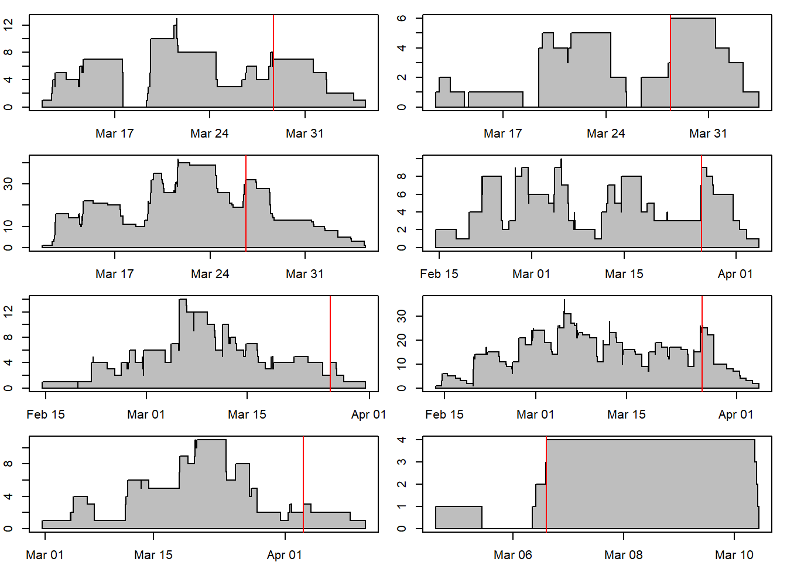
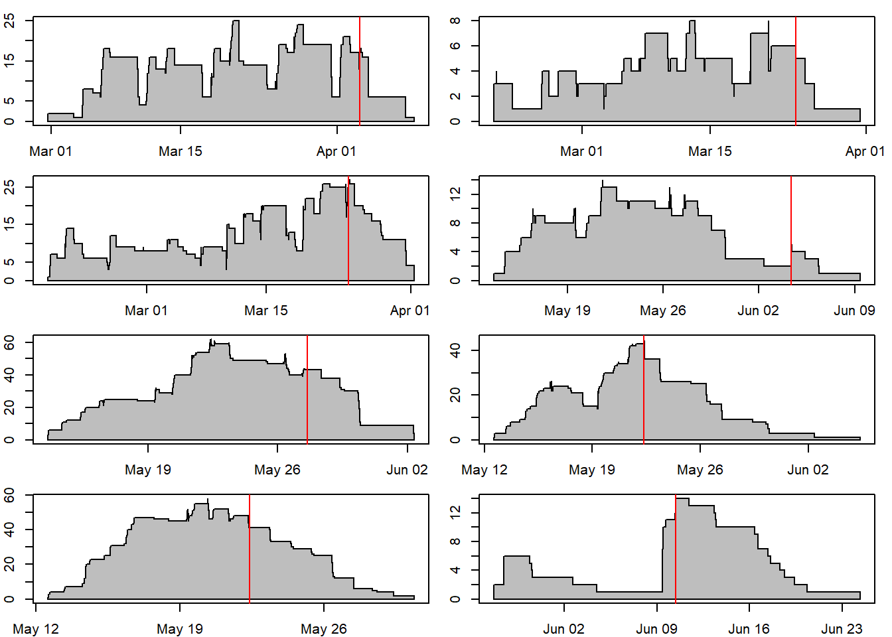
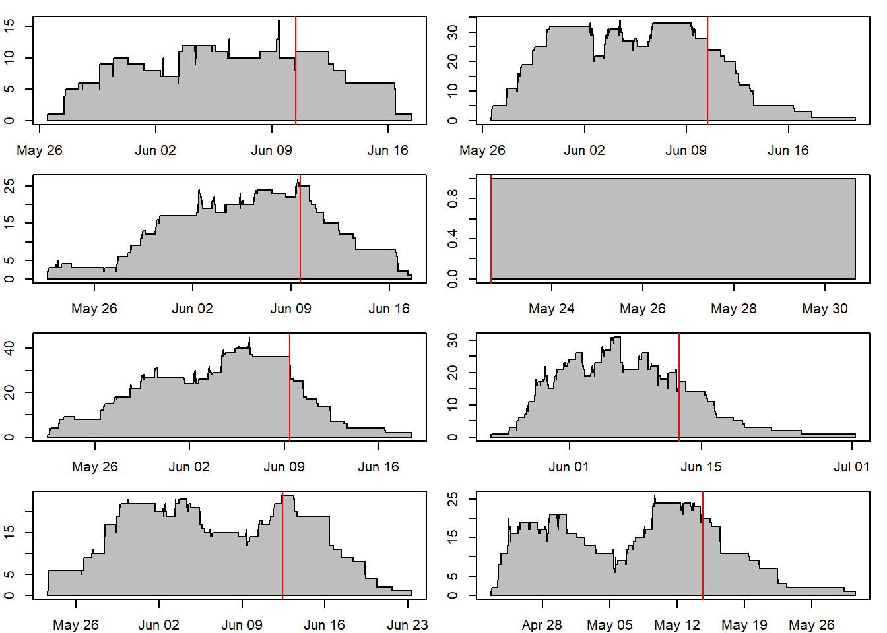
par(opar)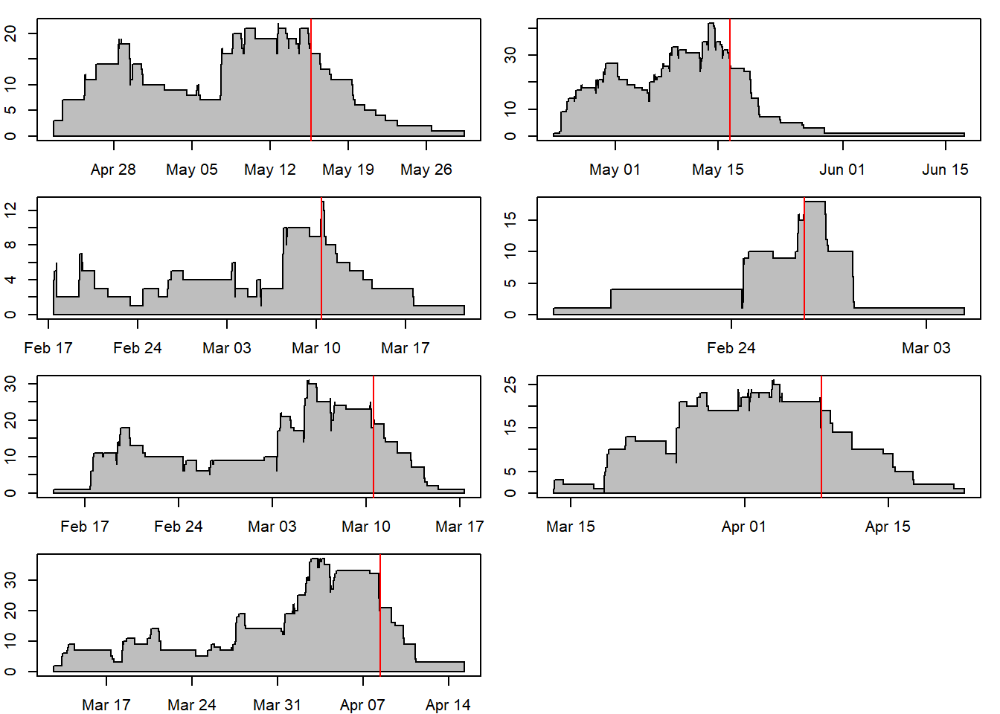
dev.off()null device
1 5.4 Durations
The distribution of the durations of stay in the wards: Distribution of time spent in the ward
ward_dates |>
mutate(duration = as.numeric(DISCHARGE - ADMISSION) / mpd) |>
pull(duration) |>
hist2(xlab = "duration of stay (days)", ylab = "number of patients")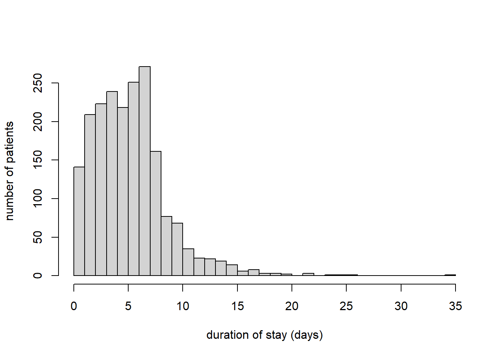
Let’s see whether there is any trend on the duration of stay across wards: The duration of stay as a function of the number of patients enrolled across the wards.
the_data <- ward_dates |>
mutate(duration = as.numeric(DISCHARGE - ADMISSION) / mpd) |>
left_join(nb_wards, "ward") |>
select(n, duration)
the_model <- gam(duration ~ s(n), Gamma, the_data, method = "REML") |>
fitted_values(tibble(n = seq(min(the_data$n), max(the_data$n), le = 512)))
with(the_data, plot(jitter(n, 5), duration, col = adjustcolor("black", .1), pch = 19,
xlab = "number of patients enrolled",
ylab = "duration of stay (days)"))
color_model <- "steelblue"
with(the_model, {
polygon2(n, .lower_ci, .upper_ci, col = adjustcolor(color_model, .3))
lines(n, .fitted, col = color_model)
})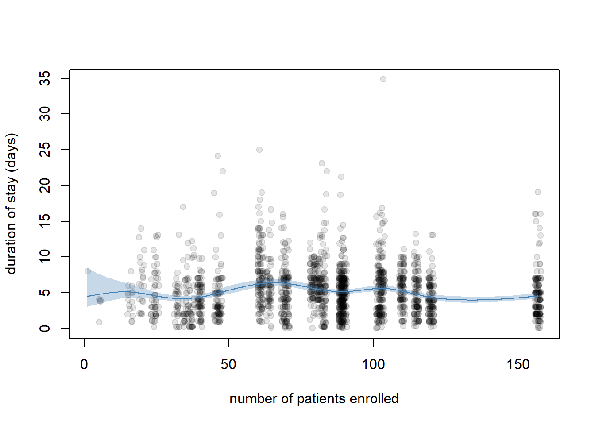
5.5 Patient-level covariates
Patient-level covariates to adjust for in the msm of CRE acqusition during hospitalization:
covariates_1 <- CRF |>
extract2("ADM") |>
select(USUBJID, SITEID, YEAR_BIRTH, GENDER, ADMISSION_DATE, WARD_3, CORMOBIDITY,
MI_HIS, CHF, PVD, CVD, DEMENTIA, CPD, CTD, PUD, MILD_LIVER, SEV_LIVER,
HEMIPLEGIA, SEV_RENAL, starts_with("DIAB"), TUMOR_NOMETA, LEUKEMIA,
LYMPHOMA,META_TUMOR, ANB_ADMISSION) |>
mutate(
hospitaltype = ifelse(SITEID %in% c("010", "159"), "provincial", "district"),
age = 2025 - YEAR_BIRTH + 1,
Ab_history = ANB_ADMISSION %in% c(1, 4), # 1: No; 4: Don't know
wardtype = as.factor(ifelse(WARD_3, "surgical", "medical/ID")),
across(GENDER, ~ c("male", "female")[as.integer(.x)]),
across(CORMOBIDITY, ~ .x > 1)) |>
select(-YEAR_BIRTH, -ANB_ADMISSION, -WARD_3)
covariates_1# A tibble: 2,000 × 27
USUBJID SITEID GENDER ADMISSION_DATE CORMOBIDITY MI_HIS CHF PVD
<chr> <chr> <chr> <dttm> <lgl> <lgl> <lgl> <lgl>
1 008-1-1-01 008 female 2025-03-11 00:00:00 TRUE FALSE FALSE FALSE
2 008-1-1-02 008 male 2025-03-11 00:00:00 TRUE FALSE FALSE FALSE
3 008-1-1-03 008 female 2025-03-11 00:00:00 TRUE FALSE FALSE FALSE
4 008-1-1-04 008 female 2025-03-11 00:00:00 TRUE FALSE FALSE FALSE
5 008-1-1-05 008 male 2025-03-11 00:00:00 TRUE FALSE FALSE FALSE
6 008-1-1-06 008 female 2025-03-11 00:00:00 TRUE FALSE FALSE FALSE
7 008-1-1-07 008 female 2025-03-12 00:00:00 TRUE FALSE FALSE FALSE
8 008-1-1-08 008 female 2025-03-11 00:00:00 TRUE FALSE FALSE FALSE
9 008-1-1-09 008 male 2025-03-11 00:00:00 TRUE FALSE FALSE FALSE
10 008-1-1-10 008 male 2025-03-12 00:00:00 FALSE FALSE FALSE FALSE
# ℹ 1,990 more rows
# ℹ 19 more variables: CVD <lgl>, DEMENTIA <lgl>, CPD <lgl>, CTD <lgl>,
# PUD <lgl>, MILD_LIVER <lgl>, SEV_LIVER <lgl>, HEMIPLEGIA <lgl>,
# SEV_RENAL <lgl>, DIAB_NOEOD <lgl>, DIAB_EOD <lgl>, TUMOR_NOMETA <lgl>,
# LEUKEMIA <lgl>, LYMPHOMA <lgl>, META_TUMOR <lgl>, hospitaltype <chr>,
# age <dbl>, Ab_history <lgl>, wardtype <fct>covariates_2 <- CRF |>
extract2("DEMO_HIS") |>
select(USUBJID, MARITAL, starts_with("JOB"), ADULT, CHILDREN, AMBULATORY, SMOKING,
starts_with("ALCOHOL"), starts_with("DRUG")) |>
mutate(job = JOB_SPECIFY |>
case_match(c("Cán bộ công chức", "Cán bộ xã") ~ 1,
c("Bảo vệ", "Cơ khí","Hộ lý", "Lái tàu thủy", "Lao động tự do",
"Vệ sỹ") ~ 4,
c("già", "Già", "Hết độ tuổi lao động") ~ 8,
c("Ở nhà", "Tự do") ~ 9, .default = as.numeric(JOB)) |>
case_match(6 ~ "farmer", 7 ~ "housewife", 8 ~ "retired",
.default = "all_others"),
householdsize = ADULT + CHILDREN,
smoking = case_match(SMOKING, "1" ~ "current smoker",
"2" ~ "former smoker",
.default = "all non-smokers"),
children = CHILDREN > 0,
married = MARITAL < 2,
independent = AMBULATORY < 2,
across(starts_with(c("ALCOHOL", "DRUG")), as.integer),
problem_alcohol = ALCOHOL_CUTDOWN + ALCOHOL_ANNOYED + ALCOHOL_GUILTY +
ALCOHOL_DRUG > 4,
problem_drug = DRUG_CUTDOWN + DRUG_ANNOYED +
DRUG_GUILTY + DRUG_DRUG > 4) |>
select(-MARITAL, -starts_with("JOB"), -ADULT, -CHILDREN, -AMBULATORY, -SMOKING,
-starts_with("ALCOHOL"), -starts_with("DRUG"))Warning: There was 1 warning in `mutate()`.
ℹ In argument: `job = case_match(...)`.
Caused by warning:
! `case_match()` was deprecated in dplyr 1.2.0.
ℹ Please use `recode_values()` instead.covariates_2# A tibble: 1,998 × 8
USUBJID householdsize smoking children married independent problem_alcohol
<chr> <dbl> <chr> <lgl> <lgl> <lgl> <lgl>
1 008-1-1-01 4 all no… TRUE TRUE TRUE FALSE
2 008-1-1-02 2 former… TRUE FALSE TRUE TRUE
3 008-1-1-03 3 all no… TRUE TRUE TRUE FALSE
4 008-1-1-04 3 all no… TRUE TRUE TRUE FALSE
5 008-1-1-05 4 all no… FALSE TRUE FALSE FALSE
6 008-1-1-06 6 all no… TRUE FALSE TRUE FALSE
7 008-1-1-07 6 all no… TRUE TRUE FALSE FALSE
8 008-1-1-08 5 all no… TRUE FALSE FALSE FALSE
9 008-1-1-09 2 curren… TRUE TRUE TRUE TRUE
10 008-1-1-10 0 curren… FALSE FALSE TRUE TRUE
# ℹ 1,988 more rows
# ℹ 1 more variable: problem_drug <lgl>covariates_3 <- CRF |>
extract2("DEMO_HIS_HISTORY_GRID") |>
select(USUBJID, HIS_CONDITION, HIS_YN) |>
mutate(across(HIS_YN, ~ .x > 1),
across(HIS_CONDITION, ~ c("InvasiveHistory",
"MedicationHistory", "TravelHistory",
"HealthcareHistory")[as.integer(.x)])) |>
pivot_wider(names_from = HIS_CONDITION, values_from = HIS_YN)
covariates_3# A tibble: 1,998 × 5
USUBJID InvasiveHistory MedicationHistory TravelHistory HealthcareHistory
<chr> <lgl> <lgl> <lgl> <lgl>
1 008-1-1-01 FALSE FALSE FALSE FALSE
2 008-1-1-02 FALSE TRUE FALSE FALSE
3 008-1-1-03 FALSE TRUE FALSE FALSE
4 008-1-1-04 FALSE FALSE FALSE FALSE
5 008-1-1-05 FALSE TRUE FALSE FALSE
6 008-1-1-06 FALSE TRUE FALSE FALSE
7 008-1-1-07 FALSE TRUE FALSE FALSE
8 008-1-1-08 FALSE TRUE FALSE TRUE
9 008-1-1-09 FALSE TRUE FALSE FALSE
10 008-1-1-10 FALSE FALSE FALSE FALSE
# ℹ 1,988 more rowscovariates_4 <- CRF |>
extract2("DIS") |>
select(USUBJID, DISCHARGE, FINAL_DIAG_ICD10) |>
mutate(ICDGroup = case_match(FINAL_DIAG_ICD10,
id_intestinal ~ "ID (Intestinal)",
id_other ~ "ID (Other)",
neoplasms ~ "Neoplasms",
circulatory_diseases ~ "Circulatory diseases",
respiratory_diseases ~ "Respiratory diseases",
digestive_diseases ~ "Digestive diseases",
genitourinary_diseases ~ "Genitourinary diseases",
.default = "Other"))|>
select(-FINAL_DIAG_ICD10)Antibiotic use during hospital stay
AB_after_admission <- CRF |>
extract2("ANT_ANB_HOSP_GRID") |>
select(USUBJID, ANB_HOSP_NAME, ANB_OTHER_SPEC, ANB_HOSP_START_DATE,
ANB_HOSP_END_DATE) |>
mutate(agent = case_match(ANB_OTHER_SPEC,
cefoperazone ~ "Cefoperazone",
ampicill_sulb ~ "Ampicillin_sulbactam",
cefamandol ~ "Cefamandol",
cefo_sulb ~ "Cefoperazon_sulbactam",
cefazolin ~ "Cefazolin",
cefprozil ~ "Cefprozil",
cefradin ~ "Cefradin",
ceftizoxime ~ "Ceftizoxime",
cefmetazol ~ "Cefmetazol",
ticarcillin_acid_clavulan ~ "Ticarcillin/acid clavulanic",
.default = ANB_HOSP_NAME),
DOT = as.numeric((ANB_HOSP_END_DATE - ANB_HOSP_START_DATE) / spd + 1)) |>
group_by(USUBJID, agent) |>
summarise(DOT = sum(DOT, na.rm=TRUE), .groups = "drop") |>
pivot_wider(names_from = agent, values_from = DOT, values_fill = 0) |>
mutate(across(everything(), ~ replace_na(.x, 0)),
DOT = rowSums(across(where(is.numeric))))Early antibiotic exposure during hospital stay
# choose early window
window_days <- 3 # 3 calendar days including admission day
# use 2 for a tighter "early" exposure
carbapenems <- c("Imipenem_cilastatin", "Meropenem", "Ertapenem", "Doripenem")
Admission_date <- CRF |>
extract2("ADM") |>
distinct(USUBJID, ADMISSION_DATE)
abx_early <- CRF$ANT_ANB_HOSP_GRID |>
select(
USUBJID,
ANB_HOSP_NAME,
ANB_OTHER_SPEC,
ANB_HOSP_START_DATE,
ANB_HOSP_END_DATE
) |>
left_join(Admission_date, by = "USUBJID") |>
filter(
!is.na(ADMISSION_DATE),
!is.na(ANB_HOSP_START_DATE),
!is.na(ANB_HOSP_END_DATE)
) |>
mutate(
agent = case_match(
ANB_OTHER_SPEC,
cefoperazone ~ "Cefoperazone",
ampicill_sulb ~ "Ampicillin_sulbactam",
cefamandol ~ "Cefamandol",
cefo_sulb ~ "Cefoperazon_sulbactam",
cefazolin ~ "Cefazolin",
cefprozil ~ "Cefprozil",
cefradin ~ "Cefradin",
ceftizoxime ~ "Ceftizoxime",
cefmetazol ~ "Cefmetazol",
ticarcillin_acid_clavulan ~ "Ticarcillin_acid_clavulanic",
.default = ANB_HOSP_NAME
),
win_start = ADMISSION_DATE,
win_end = ADMISSION_DATE + (window_days - 1L),
overlap_start = pmax(ANB_HOSP_START_DATE, win_start),
overlap_end = pmin(ANB_HOSP_END_DATE, win_end)
) |>
filter(overlap_end >= overlap_start) |>
mutate(day = map2(overlap_start, overlap_end, seq.Date, by = "day")) |>
unnest(day) |>
distinct(USUBJID, day, agent, .keep_all = TRUE) |>
mutate(carbapenem = agent %in% carbapenems) |>
group_by(USUBJID) |>
summarise(
admission_date = first(as.Date(ADMISSION_DATE)),
early_any_abx = n() > 0,
early_DOT = n(),
early_carb_DOT = sum(carbapenem),
first_abx_day = min(day),
.groups = "drop"
) |>
mutate(
days_to_first_abx = as.integer(first_abx_day - admission_date)
) |>
select(-admission_date, -first_abx_day)Merging all covariates_pt
covariates_pt <- covariates_1 |>
left_join(covariates_2, by = "USUBJID")|>
left_join(covariates_3, by = "USUBJID")|>
left_join(covariates_4, by = "USUBJID")|>
left_join(AB_after_admission, by = "USUBJID")|>
left_join(abx_early, by = "USUBJID")
covariates_pt# A tibble: 2,000 × 95
USUBJID SITEID GENDER ADMISSION_DATE CORMOBIDITY MI_HIS CHF PVD
<chr> <chr> <chr> <dttm> <lgl> <lgl> <lgl> <lgl>
1 008-1-1-01 008 female 2025-03-11 00:00:00 TRUE FALSE FALSE FALSE
2 008-1-1-02 008 male 2025-03-11 00:00:00 TRUE FALSE FALSE FALSE
3 008-1-1-03 008 female 2025-03-11 00:00:00 TRUE FALSE FALSE FALSE
4 008-1-1-04 008 female 2025-03-11 00:00:00 TRUE FALSE FALSE FALSE
5 008-1-1-05 008 male 2025-03-11 00:00:00 TRUE FALSE FALSE FALSE
6 008-1-1-06 008 female 2025-03-11 00:00:00 TRUE FALSE FALSE FALSE
7 008-1-1-07 008 female 2025-03-12 00:00:00 TRUE FALSE FALSE FALSE
8 008-1-1-08 008 female 2025-03-11 00:00:00 TRUE FALSE FALSE FALSE
9 008-1-1-09 008 male 2025-03-11 00:00:00 TRUE FALSE FALSE FALSE
10 008-1-1-10 008 male 2025-03-12 00:00:00 FALSE FALSE FALSE FALSE
# ℹ 1,990 more rows
# ℹ 87 more variables: CVD <lgl>, DEMENTIA <lgl>, CPD <lgl>, CTD <lgl>,
# PUD <lgl>, MILD_LIVER <lgl>, SEV_LIVER <lgl>, HEMIPLEGIA <lgl>,
# SEV_RENAL <lgl>, DIAB_NOEOD <lgl>, DIAB_EOD <lgl>, TUMOR_NOMETA <lgl>,
# LEUKEMIA <lgl>, LYMPHOMA <lgl>, META_TUMOR <lgl>, hospitaltype <chr>,
# age <dbl>, Ab_history <lgl>, wardtype <fct>, householdsize <dbl>,
# smoking <chr>, children <lgl>, married <lgl>, independent <lgl>, …6 MALDI-TOF data
List of genus to exclude:
genus2exclude <- c("Aeromonas", "Enterococcus", "Acinetobacter", "Cupriavidus",
"Pseudomonas")Reading the MALDI-TOF data:
(MALDITOF <- path2data |>
paste0(MALDITOF_file) |>
read_excel() |>
select(USUBJID, SampleSchedule, Identification_MALDITOF) |>
unique() |>
mutate(binom_name = Identification_MALDITOF) |>
separate_wider_delim(binom_name, " ", names = c("genus", "species")) |>
filter(! genus %in% genus2exclude))# A tibble: 1,146 × 5
USUBJID SampleSchedule Identification_MALDITOF genus species
<chr> <chr> <chr> <chr> <chr>
1 010-1-1-01 ADMISSION Klebsiella pneumoniae Klebsiella pneumoniae
2 160-1-1-09 ADMISSION Enterobacter hormaechei Enterobacter hormaechei
3 160-2-1-06 ADMISSION Klebsiella pneumoniae Klebsiella pneumoniae
4 160-2-1-04 ADMISSION Enterobacter hormaechei Enterobacter hormaechei
5 160-2-1-04 DISCHARGE Enterobacter hormaechei Enterobacter hormaechei
6 010-1-1-06 DISCHARGE Enterobacter cloacae Enterobacter cloacae
7 010-1-1-01 DISCHARGE Klebsiella pneumoniae Klebsiella pneumoniae
8 010-1-1-14 ADMISSION Klebsiella aerogenes Klebsiella aerogenes
9 160-2-1-06 DISCHARGE Klebsiella pneumoniae Klebsiella pneumoniae
10 010-1-1-03 DISCHARGE Klebsiella pneumoniae Klebsiella pneumoniae
# ℹ 1,136 more rowsThe list of positive samples:
(MALDITOF_samples <- MALDITOF |>
select(- Identification_MALDITOF) |>
unique())# A tibble: 1,146 × 4
USUBJID SampleSchedule genus species
<chr> <chr> <chr> <chr>
1 010-1-1-01 ADMISSION Klebsiella pneumoniae
2 160-1-1-09 ADMISSION Enterobacter hormaechei
3 160-2-1-06 ADMISSION Klebsiella pneumoniae
4 160-2-1-04 ADMISSION Enterobacter hormaechei
5 160-2-1-04 DISCHARGE Enterobacter hormaechei
6 010-1-1-06 DISCHARGE Enterobacter cloacae
7 010-1-1-01 DISCHARGE Klebsiella pneumoniae
8 010-1-1-14 ADMISSION Klebsiella aerogenes
9 160-2-1-06 DISCHARGE Klebsiella pneumoniae
10 010-1-1-03 DISCHARGE Klebsiella pneumoniae
# ℹ 1,136 more rowsThe number of positive samples at admission is:
(nb_positive_samples_admission <- MALDITOF_samples |>
filter(SampleSchedule == "ADMISSION") |>
nrow())[1] 388The number of positive samples at admission is:
(nb_positive_samples_discharge <- MALDITOF_samples |>
filter(SampleSchedule == "DISCHARGE") |>
nrow())[1] 758The number of positive samples is:
(nb_positive_samples <- nb_positive_samples_admission + nb_positive_samples_discharge)[1] 1146Which represents 29.35 % of samples. The distribution of bacteria across the samples:
prevalences <- function(x, nb_positive_samples, nb_samples) {
x |>
group_by(Identification_MALDITOF) |>
tally() |>
mutate(`% +ve smpls` = round(100 * n / nb_positive_samples, 1),
`% all smpls` = round(100 * n / nb_samples, 1)) |>
arrange(desc(n))
}Prevalences across all samples:
(prevalences_all <- prevalences(MALDITOF, nb_positive_samples, nb_samples))# A tibble: 16 × 4
Identification_MALDITOF n `% +ve smpls` `% all smpls`
<chr> <int> <dbl> <dbl>
1 Escherichia coli 828 72.3 21.2
2 Klebsiella pneumoniae 189 16.5 4.8
3 Enterobacter hormaechei 72 6.3 1.8
4 Enterobacter cloacae 24 2.1 0.6
5 Klebsiella aerogenes 10 0.9 0.3
6 Citrobacter freundii 6 0.5 0.2
7 Enterobacter kobei 4 0.3 0.1
8 Raoultella ornithinolytica 3 0.3 0.1
9 Escherichia hermannii 2 0.2 0.1
10 Kluyvera georgiana 2 0.2 0.1
11 Citrobacter braakii 1 0.1 0
12 Cronobacter sp. 1 0.1 0
13 Enterobacter bugandensis 1 0.1 0
14 Enterobacter roggenkampii 1 0.1 0
15 Klebsiella oxytoca 1 0.1 0
16 Klebsiella variicola 1 0.1 0 The list of all the bacteria in the MALDITOF results:
(bugs <- prevalences_all |>
filter(Identification_MALDITOF != "unidentified") |>
pull(Identification_MALDITOF) |>
sort()) [1] "Citrobacter braakii" "Citrobacter freundii"
[3] "Cronobacter sp." "Enterobacter bugandensis"
[5] "Enterobacter cloacae" "Enterobacter hormaechei"
[7] "Enterobacter kobei" "Enterobacter roggenkampii"
[9] "Escherichia coli" "Escherichia hermannii"
[11] "Klebsiella aerogenes" "Klebsiella oxytoca"
[13] "Klebsiella pneumoniae" "Klebsiella variicola"
[15] "Kluyvera georgiana" "Raoultella ornithinolytica"Prevalences at admission:
(prevalences_admission <- MALDITOF |>
filter(SampleSchedule == "ADMISSION") |>
prevalences(nb_positive_samples_admission, nb_samples_admission))# A tibble: 8 × 4
Identification_MALDITOF n `% +ve smpls` `% all smpls`
<chr> <int> <dbl> <dbl>
1 Escherichia coli 305 78.6 15.2
2 Klebsiella pneumoniae 56 14.4 2.8
3 Enterobacter hormaechei 17 4.4 0.8
4 Klebsiella aerogenes 4 1 0.2
5 Enterobacter cloacae 3 0.8 0.1
6 Enterobacter bugandensis 1 0.3 0
7 Enterobacter kobei 1 0.3 0
8 Escherichia hermannii 1 0.3 0 Prevalences at discharge:
(prevalences_discharge <- MALDITOF |>
filter(SampleSchedule == "DISCHARGE") |>
prevalences(nb_positive_samples_discharge, nb_samples_discharge))# A tibble: 15 × 4
Identification_MALDITOF n `% +ve smpls` `% all smpls`
<chr> <int> <dbl> <dbl>
1 Escherichia coli 523 69 27.5
2 Klebsiella pneumoniae 133 17.5 7
3 Enterobacter hormaechei 55 7.3 2.9
4 Enterobacter cloacae 21 2.8 1.1
5 Citrobacter freundii 6 0.8 0.3
6 Klebsiella aerogenes 6 0.8 0.3
7 Enterobacter kobei 3 0.4 0.2
8 Raoultella ornithinolytica 3 0.4 0.2
9 Kluyvera georgiana 2 0.3 0.1
10 Citrobacter braakii 1 0.1 0.1
11 Cronobacter sp. 1 0.1 0.1
12 Enterobacter roggenkampii 1 0.1 0.1
13 Escherichia hermannii 1 0.1 0.1
14 Klebsiella oxytoca 1 0.1 0.1
15 Klebsiella variicola 1 0.1 0.1Let’s compare the prevalences at admission and discharge:
prev_adm_disch <- prevalences_all |>
select(Identification_MALDITOF) |>
left_join(prevalences_admission, "Identification_MALDITOF") |>
left_join(prevalences_discharge, "Identification_MALDITOF",
suffix = c(" (A)", " (D)")) |>
mutate(across(everything(), ~ replace_na(.x, 0)))The number of positive samples:
prev_adm_disch |>
select(Identification_MALDITOF, starts_with("n"))# A tibble: 16 × 3
Identification_MALDITOF `n (A)` `n (D)`
<chr> <int> <int>
1 Escherichia coli 305 523
2 Klebsiella pneumoniae 56 133
3 Enterobacter hormaechei 17 55
4 Enterobacter cloacae 3 21
5 Klebsiella aerogenes 4 6
6 Citrobacter freundii 0 6
7 Enterobacter kobei 1 3
8 Raoultella ornithinolytica 0 3
9 Escherichia hermannii 1 1
10 Kluyvera georgiana 0 2
11 Citrobacter braakii 0 1
12 Cronobacter sp. 0 1
13 Enterobacter bugandensis 1 0
14 Enterobacter roggenkampii 0 1
15 Klebsiella oxytoca 0 1
16 Klebsiella variicola 0 1Their proportion among positive samples:
prev_adm_disch |>
select(Identification_MALDITOF, starts_with("% +"))# A tibble: 16 × 3
Identification_MALDITOF `% +ve smpls (A)` `% +ve smpls (D)`
<chr> <dbl> <dbl>
1 Escherichia coli 78.6 69
2 Klebsiella pneumoniae 14.4 17.5
3 Enterobacter hormaechei 4.4 7.3
4 Enterobacter cloacae 0.8 2.8
5 Klebsiella aerogenes 1 0.8
6 Citrobacter freundii 0 0.8
7 Enterobacter kobei 0.3 0.4
8 Raoultella ornithinolytica 0 0.4
9 Escherichia hermannii 0.3 0.1
10 Kluyvera georgiana 0 0.3
11 Citrobacter braakii 0 0.1
12 Cronobacter sp. 0 0.1
13 Enterobacter bugandensis 0.3 0
14 Enterobacter roggenkampii 0 0.1
15 Klebsiella oxytoca 0 0.1
16 Klebsiella variicola 0 0.1Their proportions among all samples:
prev_adm_disch |>
select(Identification_MALDITOF, starts_with("% a"))# A tibble: 16 × 3
Identification_MALDITOF `% all smpls (A)` `% all smpls (D)`
<chr> <dbl> <dbl>
1 Escherichia coli 15.2 27.5
2 Klebsiella pneumoniae 2.8 7
3 Enterobacter hormaechei 0.8 2.9
4 Enterobacter cloacae 0.1 1.1
5 Klebsiella aerogenes 0.2 0.3
6 Citrobacter freundii 0 0.3
7 Enterobacter kobei 0 0.2
8 Raoultella ornithinolytica 0 0.2
9 Escherichia hermannii 0 0.1
10 Kluyvera georgiana 0 0.1
11 Citrobacter braakii 0 0.1
12 Cronobacter sp. 0 0.1
13 Enterobacter bugandensis 0 0
14 Enterobacter roggenkampii 0 0.1
15 Klebsiella oxytoca 0 0.1
16 Klebsiella variicola 0 0.1The list of bacteria absent at admission and present at discharge:
prev_adm_disch |>
select(Identification_MALDITOF, starts_with("n")) |>
filter(`n (A)` == 0)# A tibble: 8 × 3
Identification_MALDITOF `n (A)` `n (D)`
<chr> <int> <int>
1 Citrobacter freundii 0 6
2 Raoultella ornithinolytica 0 3
3 Kluyvera georgiana 0 2
4 Citrobacter braakii 0 1
5 Cronobacter sp. 0 1
6 Enterobacter roggenkampii 0 1
7 Klebsiella oxytoca 0 1
8 Klebsiella variicola 0 1The list of bacteria present at admission and absent at discharge:
prev_adm_disch |>
select(Identification_MALDITOF, starts_with("n")) |>
filter(`n (D)` == 0)# A tibble: 1 × 3
Identification_MALDITOF `n (A)` `n (D)`
<chr> <int> <int>
1 Enterobacter bugandensis 1 0Let’s now look at changes in colonization status between admission and discharge. The following function prepares the data for an alluvial plot:
make_alluvial_data <- function(x) {
positive_samples <- x |>
mutate(state = 2) |> # the exact value here does not matter
pivot_wider(names_from = SampleSchedule, values_from = state) |>
mutate(across(-USUBJID, ~ ! is.na(.x)))
dates |>
filter(! is.na(DISCHARGE)) |>
select(USUBJID) |>
left_join(positive_samples, "USUBJID") |>
mutate(across(-USUBJID, ~ replace_na(.x, FALSE)),
across(-USUBJID, ~ c("cleared", "colonized")[as.numeric(.x) + 1])) |>
group_by(ADMISSION, DISCHARGE) |>
tally() |>
ungroup()
}The following function is a wrapper around the above function and the the alluvial3() function that computes the table of changes and plot the alluvial plot for a given set of bacteria to consider:
plot_changes <- function(bacteria = "all") {
if (bacteria == "all") {
the_data <- MALDITOF_samples
} else {
the_data <- MALDITOF |>
filter(Identification_MALDITOF %in% bacteria) |>
select(- Identification_MALDITOF)
}
the_data |>
make_alluvial_data() |>
alluvial3(col = "grey", alpha = .8, border = NA)
}Let’s use this function to look at some example:
plot_changes()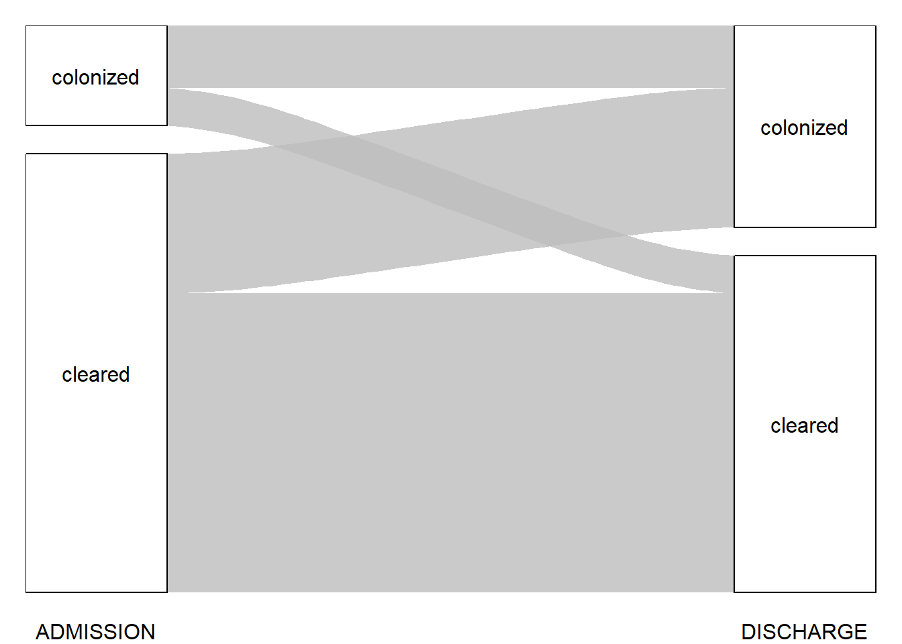
# A tibble: 4 × 3
ADMISSION DISCHARGE n
<chr> <chr> <int>
1 cleared cleared 1122
2 cleared colonized 524
3 colonized cleared 142
4 colonized colonized 234plot_changes("Escherichia coli")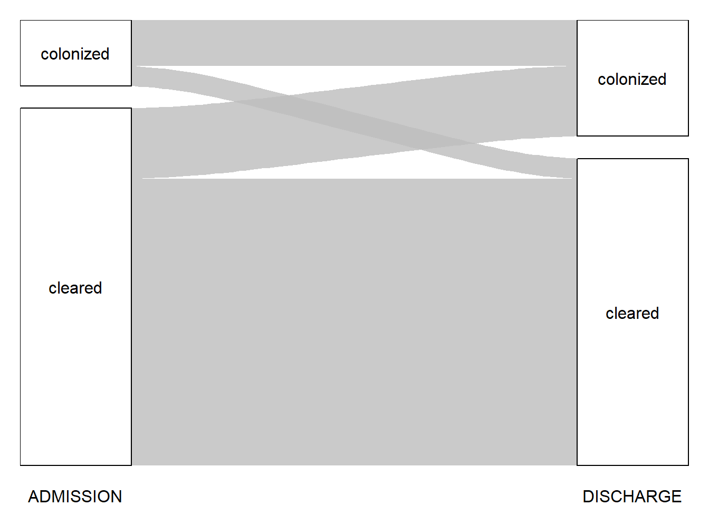
# A tibble: 4 × 3
ADMISSION DISCHARGE n
<chr> <chr> <int>
1 cleared cleared 1290
2 cleared colonized 317
3 colonized cleared 91
4 colonized colonized 206plot_changes("Klebsiella pneumoniae")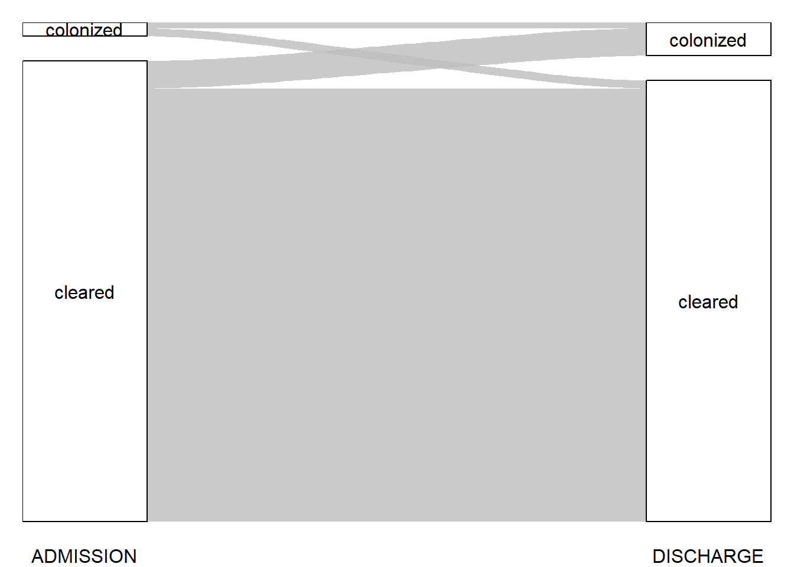
# A tibble: 4 × 3
ADMISSION DISCHARGE n
<chr> <chr> <int>
1 cleared cleared 1739
2 cleared colonized 110
3 colonized cleared 32
4 colonized colonized 237.1 All CRE
The number of enrolled patient with CRE at admission as a function of time for each ward (takes 1.5”):
opar <- par(mfrow = c(4, 2), mar = c(2, 2, 1, 1))
CRE_admission <- MALDITOF_samples |>
filter(SampleSchedule == "ADMISSION") |>
pull(USUBJID)
ward_dates |>
filter(USUBJID %in% CRE_admission) |>
group_by(ward) |>
group_map(~ ward_occupancy(.x), .keep = TRUE) |>
walk(plot_occ, ann = FALSE)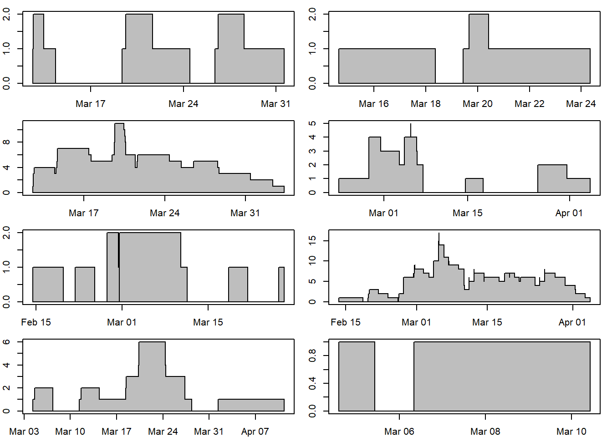
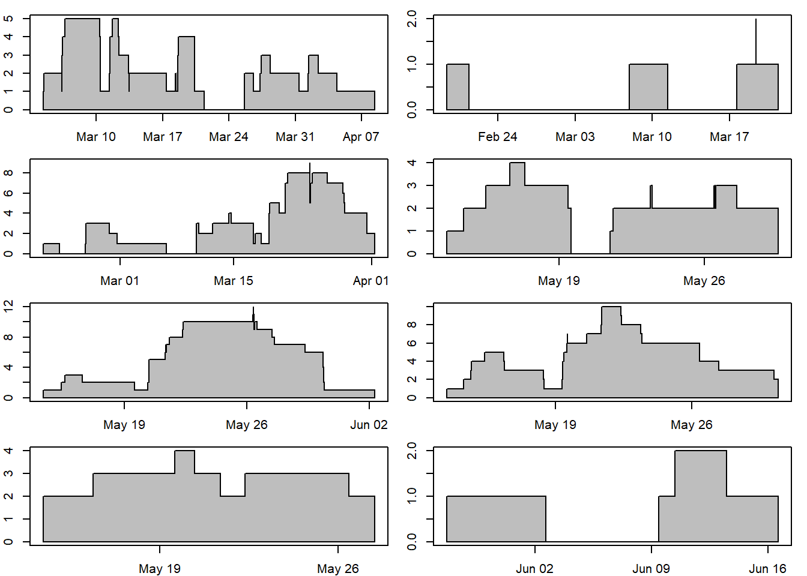
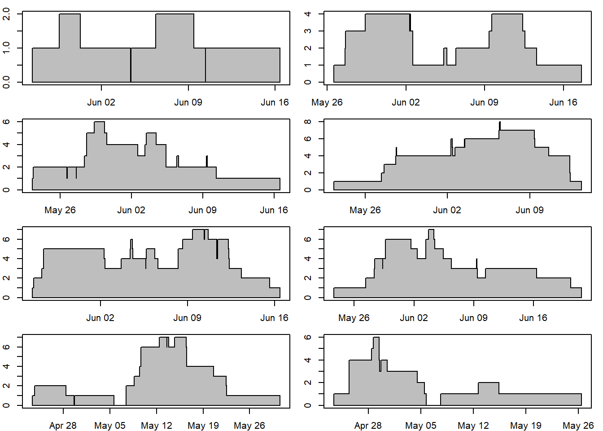
par(opar)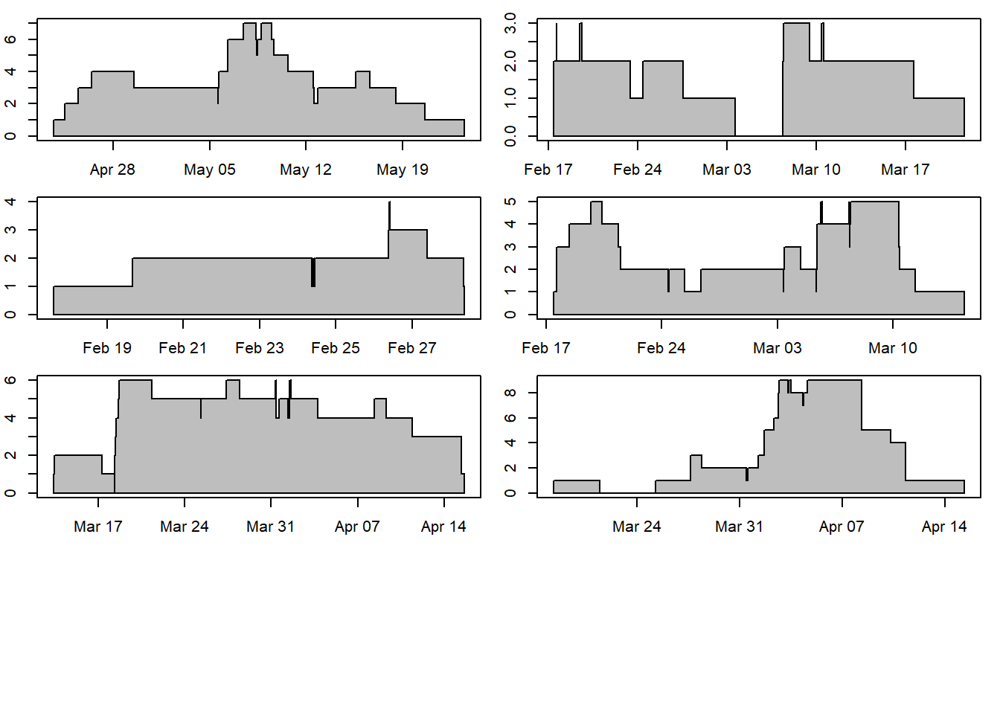
A function that plots the prevalence estimate estimate and lower and upper bounds lower and upper of the confidence interval from a data frame of a ward:
plot_prevalence <- function(x) {
with(x, plot(x_transform(date), y_transform(estimate),
type = "n", ann = FALSE, ylim = 0:1))
x |>
duplicate_NA_rows() |>
remove_NAs(estimate) |>
map(~ with(.x, polygon2(x_transform(date), y_transform(lower), y_transform(upper),
col = "grey")))
with(x, lines(x_transform(date), y_transform(estimate)))
}Computing the proportions of CRE positives as a function of time for each ward (takes 1.5”):
numerator_df <- ward_dates |>
filter(USUBJID %in% CRE_admission) |>
group_by(ward) |>
group_modify(~ ward_occupancy(.x)) |>
rename(numerator = occupancy)
proportion_CRE <- ward_dates |>
group_by(ward) |>
group_modify(~ ward_occupancy(.x)) |>
ungroup() |>
rename(denominator = occupancy) |>
left_join(numerator_df, c("ward", "date")) |>
fill(numerator) |>
mutate(across(numerator, ~ replace_na(.x, 0)),
Clopper_Pearson = map2(numerator, denominator, binom_test)) |>
unnest_wider(Clopper_Pearson)To fix the issues with binom test, use the following:
safe_binom_test <- function(x, n) {
if (is.na(x) || is.na(n) || n <= 0 || x < 0 || x > n) {
return(tibble(
estimate = NA_real_,
conf.low = NA_real_,
conf.high = NA_real_,
p.value = NA_real_
))
}
bt <- binom.test(x, n)
tibble(
estimate = unname(bt$estimate),
conf.low = bt$conf.int[1],
conf.high = bt$conf.int[2],
p.value = bt$p.value
)
}
proportion_CRE <- ward_dates |>
group_by(ward) |>
arrange(.data$ADMISSION, .by_group = TRUE) |>
group_modify(~ ward_occupancy(.x)) |>
ungroup() |>
rename(denominator = occupancy) |>
left_join(numerator_df, by = c("ward", "date")) |>
mutate(
numerator = replace_na(numerator, 0L),
denominator = as.integer(round(denominator)),
numerator = as.integer(round(numerator))) |>
mutate(
bt = map2(
numerator, denominator,
~ if (!is.na(.x) && !is.na(.y) && .y > 0 && .x >= 0 && .x <= .y) binom.test(.x, .y) else NULL)) |>
mutate(
estimate = map_dbl(bt, ~ if (is.null(.x)) NA_real_ else unname(.x$estimate)),
lower = map_dbl(bt, ~ if (is.null(.x)) NA_real_ else .x$conf.int[1]),
upper = map_dbl(bt, ~ if (is.null(.x)) NA_real_ else .x$conf.int[2])) |>
select(-bt)Proportion of enrolled patients that are CRE positive at admission as a function of time for each ward (takes 1.5”):
opar <- par(mfrow = c(4, 2), mar = c(2, 2, 1, 1))
proportion_CRE |>
group_by(ward) |>
group_walk(~ plot_prevalence(.x))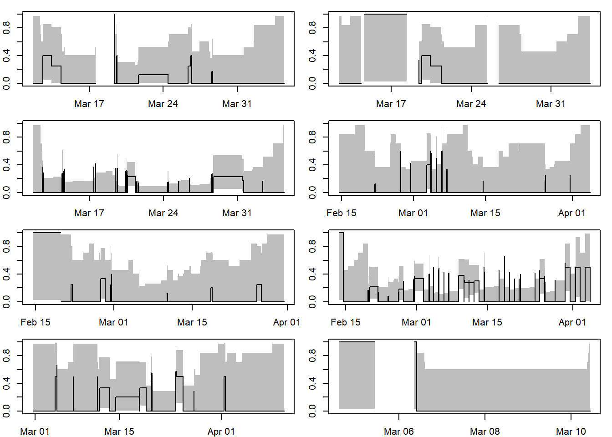
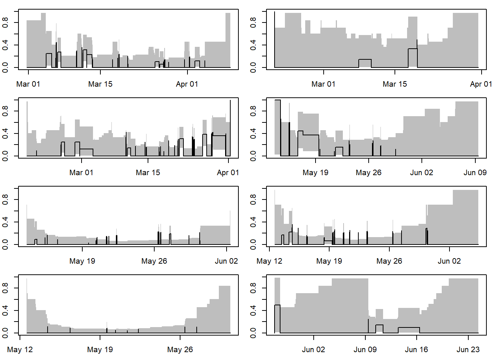
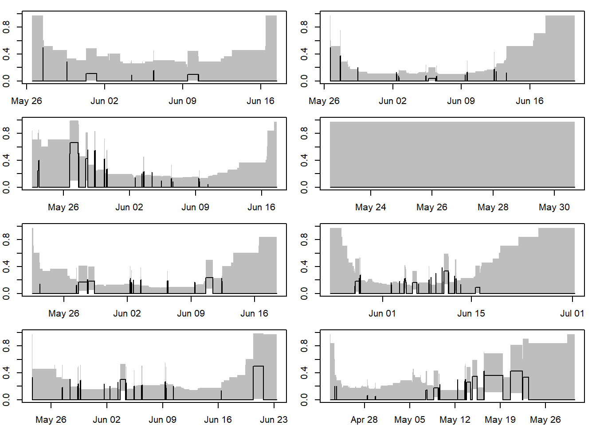
par(opar)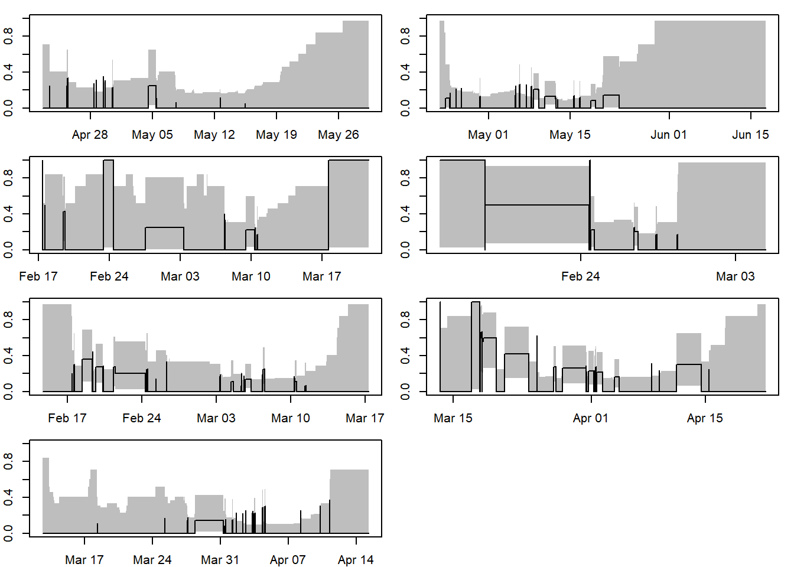
7.2 K. pneumoniae
Here we have the same plots as for the previous section but for K. pneumoniae only. First the number of enrolled patient with CRE K. pneumoniae at admission as a function of time for each ward (takes 1”):
opar <- par(mfrow = c(4, 2), mar = c(2, 2, 1, 1))
Kp_admission <- MALDITOF |>
filter(SampleSchedule == "ADMISSION",
Identification_MALDITOF == "Klebsiella pneumoniae") |>
pull(USUBJID)
ward_dates |>
filter(USUBJID %in% Kp_admission) |>
group_by(ward) |>
group_map(~ ward_occupancy(.x), .keep = TRUE) |>
walk(plot_occ, ann = FALSE)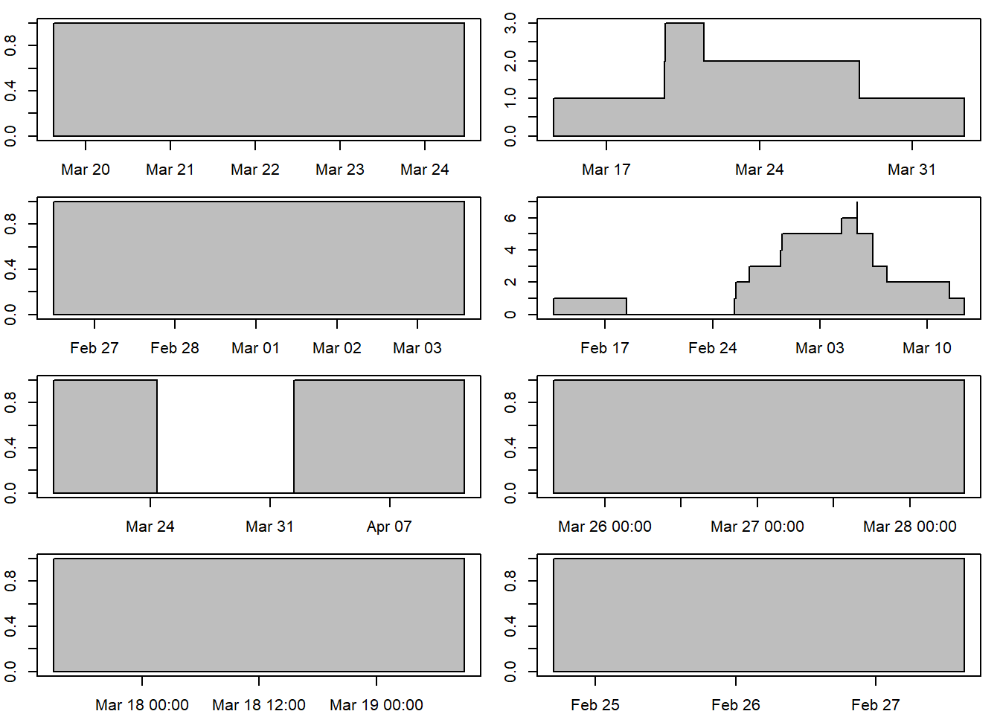
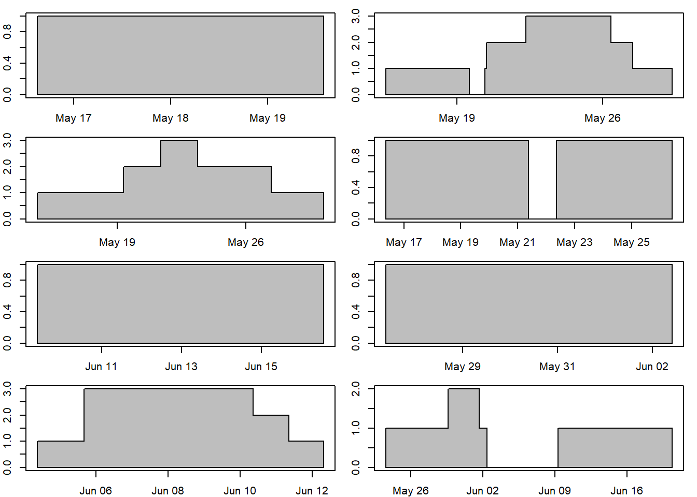
par(opar)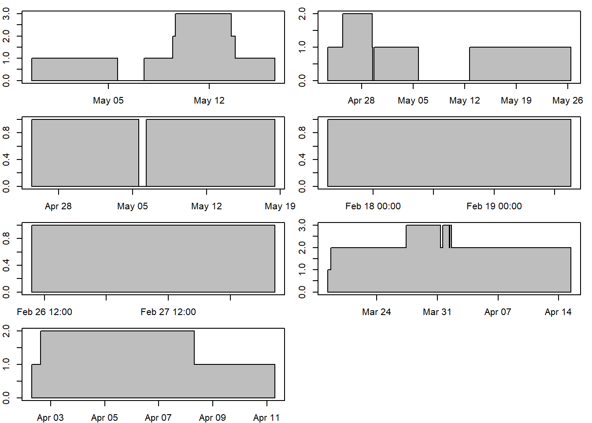
Proportion of enrolled patients that are CRE K. pneumoniae positive at admission as a function of time for each ward (takes 1.5”):
numerator_df <- ward_dates |>
filter(USUBJID %in% Kp_admission) |>
group_by(ward) |>
group_modify(~ ward_occupancy(.x)) |>
rename(numerator = occupancy)
opar <- par(mfrow = c(4, 2), mar = c(2, 2, 1, 1))
ward_dates |>
group_by(ward) |>
group_modify(~ ward_occupancy(.x)) |>
ungroup() |>
rename(denominator = occupancy) |>
left_join(numerator_df, c("ward", "date")) |>
fill(numerator) |>
mutate(across(numerator, ~ replace_na(.x, 0)),
Clopper_Pearson = map2(numerator, denominator, binom_test)) |>
unnest_wider(Clopper_Pearson) |>
group_by(ward) |>
group_walk(~ plot_prevalence(.x))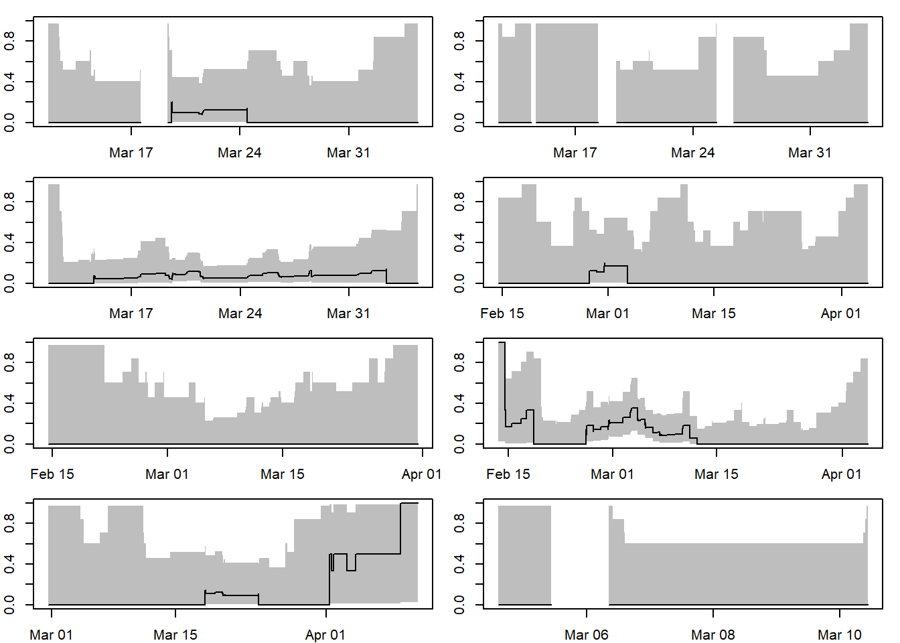
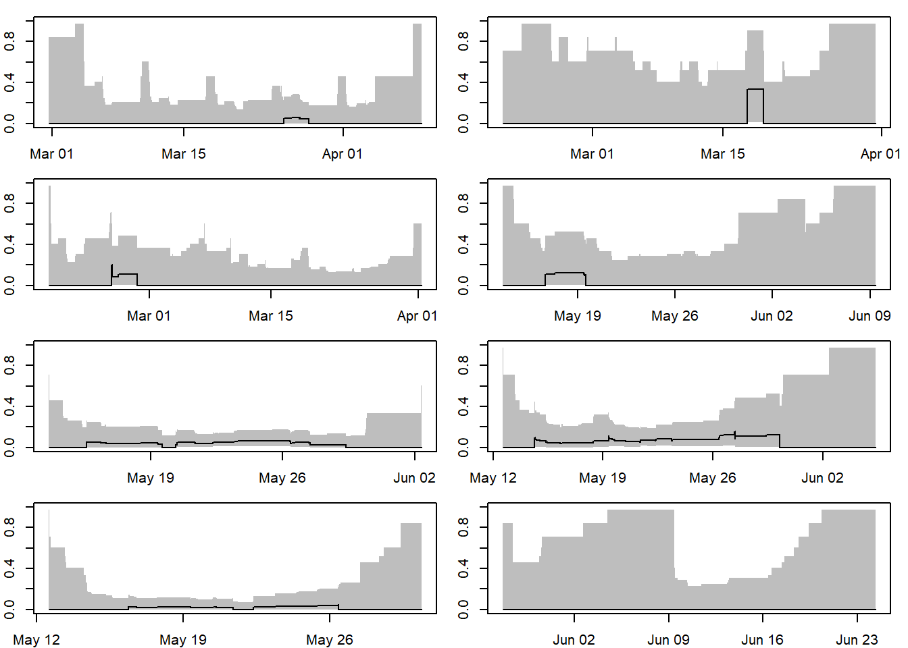
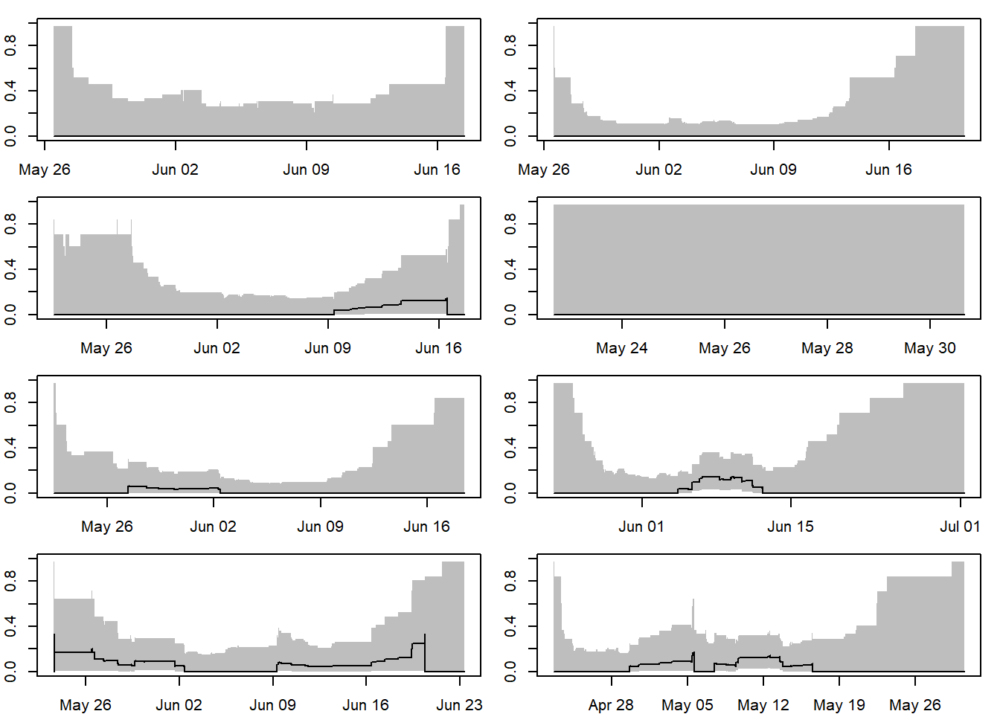
par(opar)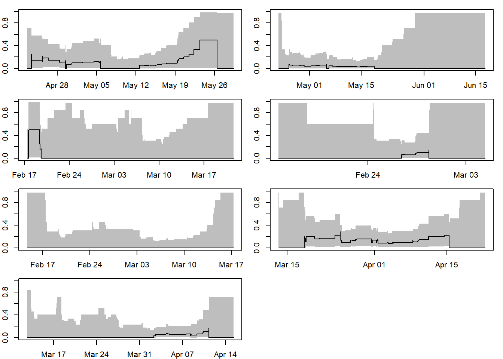
8 Data preparation
8.1 Minimum data
A function that generates the presence/absence data (coded as 2/1 here) from the output x of the MALDITOF where id is the column of x that contains the patient ID, time_point is the column of x that contains the time point of the sample (e.g. ADMISSION or DISCHARGE), identification is the column of x that contains the bacteria identified by the MALDITOF and bacteria is a vector of characters that contains the names of the bacteria that we want to test the presence of.
presence_abscence <- function(x, id, time_point, identification, bacteria) {
x |>
group_by({{ id }}, {{ time_point }}) |>
group_modify(~ col2listcol(.x, {{ identification }})) |>
ungroup() |>
mutate(state = map_lgl({{ identification }}, ~ any(bacteria %in% .x)) + 1) |>
select(- {{ identification }}) |>
arrange({{ id }}, {{ time_point }})
}The following function adds the samples that were tested negative to the output x of presence_abscence() where y is the samples dates as generated in Section 5.1.
add_negatives <- function(x, y, id, time_point) {
tp <- as_name(enquo(time_point))
y |>
pivot_longer(- {{ id }}, names_to = tp) |>
left_join(x, c(as_name(enquo(id)), tp)) |>
mutate(across(state, ~ replace_na(., 1)))
}A function that selects patients from x who have samples from at least 2 time points:
select2time_points <- function(x, id) {
id_with_2obs <- x |>
filter_out(is.na(value)) |>
pull({{ id }}) |>
table() |>
is_greater_than(1) |>
which() |>
names()
filter(x, {{ id }} %in% id_with_2obs)
}where id is the column of x that contains the patients IDs. A function that combines state and time data:
state_time <- function(state, time, id, admission, discharge, time_point) {
time |>
mutate("{{discharge}}" := as.numeric({{ discharge }} - {{ admission }}) / mpd,
"{{admission}}" := 0) |>
pivot_longer(- {{ id }},
names_to = as_name(enquo(time_point)), values_to = "days") |>
left_join(x = {{ state }}, y = _,
c(as_name(enquo(id)), as_name(enquo(time_point))))
}The following function puts the 4 above functions together:
msm_data <- function(x, y, id, time_point, identification, bacteria,
admission, discharge) {
x |>
presence_abscence({{ id }}, {{ time_point }}, {{ identification }}, bacteria) |>
add_negatives(y, {{ id }}, {{ time_point }}) |>
select2time_points({{ id }}) |>
state_time(y, {{ id }}, {{ admission }}, {{ discharge }}, {{ time_point }}) |>
select({{ id }}, state, days)
}where
xis the MALDITOF data as read in section Section 6yis the dates of samples collections as generated from the CRF in section Section 5.1idis the unquoted name of the patient ID variable that should be the same inxandytime_pointis the unquoted name of the variable ofxthat contains the time point information (for exampleADMISSIONandDISCHARGE)identificationis the unquoted name of the variable ofxthat contains the name of the identified bacteriabacteriais a vector of quoted names of bacteria we want to generate the data foradmissionis the unquoted name of the variable ofythat contains the dates of admissionsdischargeis the unquoted name of the variable ofythat contains the dates of discharge
The output of this function is a data frame with 3 columns:
the
idpatient IDthe
statevariable, with1and2for not “not infected” and “infected” respectivelythe
dayscolumns where zeros refers to admissions and non-zero values are the times of discharge in days counting from admission
A tuning of msm_data():
msm_data2 <- function(bacteria) msm_data(MALDITOF, dates, USUBJID, SampleSchedule,
Identification_MALDITOF, bacteria, ADMISSION,
DISCHARGE)8.2 Covariates
The following function adds to the output x of the msm_data() function the covariate otherCRE that tells whether at admission the patient had a CRE other than the set of bacteria:
add_other_CRE_at_admission <- function(x, bacteria) {
MALDITOF |>
filter(SampleSchedule == "ADMISSION",
! Identification_MALDITOF %in% bacteria) |>
mutate(otherCRE = TRUE) |>
select(USUBJID, otherCRE) |>
unique() |>
left_join(x = x, y = _, "USUBJID") |>
mutate(across(otherCRE, ~ replace_na(.x, FALSE)))
}This function relies on the MALDITOF data frame generated in section Section 6. The following function adds to the output x of the msm_data() function the ward ID covariate:
add_ward <- function(x) left_join(x, wards, "USUBJID")This function relies on the wards data frame generated in the section Section 5.2.
The following function adds to the output x of the add_ward() function the covariates estimate, lower and upper that are the temporal means of the proportions of enrolled patient that are CRE positive in the ward for the duration of the study:
add_CRE_prevalence_in_ward <- function(x) {
ward_means <- function(y) {
total_duration <- time_diff(range(y$date))
y |>
mutate(weight = time_diff(c(date, NA)) / total_duration) |>
summarise(across(c(estimate, lower, upper),
~ sum(replace_na(.x, 0) * weight, na.rm = TRUE)))
}
proportion_CRE |>
group_by(ward) |>
group_modify(~ ward_means(.x)) |>
ungroup() |>
left_join(x = x, y = _, "ward")
}This function relies on the proportion_CRE data frame generated in the section Section 7.1.
add_covariates_pt <- function(x) left_join(x, covariates_pt, "USUBJID")This function relies on the covariates_pt data frame generated in the section Section 5.5.
9 K. pneumoniae
9.1 Preparing the data
Generating the presence/absence of K. pneumoniae (takes 2.5”):
K_pneumoniae_raw <- presence_abscence(MALDITOF, USUBJID, SampleSchedule,
Identification_MALDITOF, "Klebsiella pneumoniae")Which gives:
K_pneumoniae_raw# A tibble: 1,038 × 5
USUBJID SampleSchedule genus species state
<chr> <chr> <chr> <chr> <dbl>
1 008-1-1-05 ADMISSION Escherichia coli 1
2 008-1-1-05 DISCHARGE Klebsiella pneumoniae 2
3 008-1-1-07 ADMISSION Escherichia coli 1
4 008-1-1-07 DISCHARGE Escherichia coli 1
5 008-1-1-08 ADMISSION Escherichia coli 1
6 008-1-1-08 DISCHARGE Escherichia coli 1
7 008-1-1-100 DISCHARGE Enterobacter hormaechei 1
8 008-1-1-14 ADMISSION Escherichia coli 1
9 008-1-1-14 DISCHARGE Kluyvera georgiana 1
10 008-1-1-15 DISCHARGE Escherichia coli 1
# ℹ 1,028 more rowsWhere 1 is absence and 2 is presence. Adding the samples with negative culture:
(K_pneumoniae_raw_a <- add_negatives(K_pneumoniae_raw, dates, USUBJID, SampleSchedule))# A tibble: 4,000 × 6
USUBJID SampleSchedule value genus species state
<chr> <chr> <dttm> <chr> <chr> <dbl>
1 008-1-1-01 ADMISSION 2025-03-11 16:30:00 <NA> <NA> 1
2 008-1-1-01 DISCHARGE 2025-03-13 14:40:00 <NA> <NA> 1
3 008-1-1-02 ADMISSION 2025-03-12 10:00:00 <NA> <NA> 1
4 008-1-1-02 DISCHARGE 2025-03-14 10:00:00 <NA> <NA> 1
5 008-1-1-03 ADMISSION 2025-03-12 09:50:00 <NA> <NA> 1
6 008-1-1-03 DISCHARGE 2025-03-14 09:50:00 <NA> <NA> 1
7 008-1-1-04 ADMISSION 2025-03-12 13:45:00 <NA> <NA> 1
8 008-1-1-04 DISCHARGE 2025-03-13 14:55:00 <NA> <NA> 1
9 008-1-1-05 ADMISSION 2025-03-12 13:40:00 Escherichia coli 1
10 008-1-1-05 DISCHARGE 2025-03-28 17:00:00 Klebsiella pneumoniae 2
# ℹ 3,990 more rowsSelecting the patients that have samples from at least 2 time points:
(K_pneumoniae <- select2time_points(K_pneumoniae_raw_a, USUBJID))# A tibble: 3,808 × 6
USUBJID SampleSchedule value genus species state
<chr> <chr> <dttm> <chr> <chr> <dbl>
1 008-1-1-01 ADMISSION 2025-03-11 16:30:00 <NA> <NA> 1
2 008-1-1-01 DISCHARGE 2025-03-13 14:40:00 <NA> <NA> 1
3 008-1-1-02 ADMISSION 2025-03-12 10:00:00 <NA> <NA> 1
4 008-1-1-02 DISCHARGE 2025-03-14 10:00:00 <NA> <NA> 1
5 008-1-1-03 ADMISSION 2025-03-12 09:50:00 <NA> <NA> 1
6 008-1-1-03 DISCHARGE 2025-03-14 09:50:00 <NA> <NA> 1
7 008-1-1-04 ADMISSION 2025-03-12 13:45:00 <NA> <NA> 1
8 008-1-1-04 DISCHARGE 2025-03-13 14:55:00 <NA> <NA> 1
9 008-1-1-05 ADMISSION 2025-03-12 13:40:00 Escherichia coli 1
10 008-1-1-05 DISCHARGE 2025-03-28 17:00:00 Klebsiella pneumoniae 2
# ℹ 3,798 more rowsMaking the dataset for the multistate modelling:
(Kp_msm <- state_time(K_pneumoniae, dates, USUBJID,
ADMISSION, DISCHARGE, SampleSchedule))# A tibble: 3,808 × 7
USUBJID SampleSchedule value genus species state days
<chr> <chr> <dttm> <chr> <chr> <dbl> <dbl>
1 008-1-1-01 ADMISSION 2025-03-11 16:30:00 <NA> <NA> 1 0
2 008-1-1-01 DISCHARGE 2025-03-13 14:40:00 <NA> <NA> 1 1.92
3 008-1-1-02 ADMISSION 2025-03-12 10:00:00 <NA> <NA> 1 0
4 008-1-1-02 DISCHARGE 2025-03-14 10:00:00 <NA> <NA> 1 2
5 008-1-1-03 ADMISSION 2025-03-12 09:50:00 <NA> <NA> 1 0
6 008-1-1-03 DISCHARGE 2025-03-14 09:50:00 <NA> <NA> 1 2
7 008-1-1-04 ADMISSION 2025-03-12 13:45:00 <NA> <NA> 1 0
8 008-1-1-04 DISCHARGE 2025-03-13 14:55:00 <NA> <NA> 1 1.05
9 008-1-1-05 ADMISSION 2025-03-12 13:40:00 Escherichia coli 1 0
10 008-1-1-05 DISCHARGE 2025-03-28 17:00:00 Klebsiella pneumo… 2 16.1
# ℹ 3,798 more rowsAlternatively, we can do all at once with this function (takes 2.5”):
Kp_msm <- msm_data(MALDITOF, dates, USUBJID, SampleSchedule, Identification_MALDITOF,
"Klebsiella pneumoniae", ADMISSION, DISCHARGE)which gives:
Kp_msm# A tibble: 3,808 × 3
USUBJID state days
<chr> <dbl> <dbl>
1 008-1-1-01 1 0
2 008-1-1-01 1 1.92
3 008-1-1-02 1 0
4 008-1-1-02 1 2
5 008-1-1-03 1 0
6 008-1-1-03 1 2
7 008-1-1-04 1 0
8 008-1-1-04 1 1.05
9 008-1-1-05 1 0
10 008-1-1-05 2 16.1
# ℹ 3,798 more rowsOr, even simpler here (takes 2.5”):
Kp_msm <- msm_data2("Klebsiella pneumoniae")Adding covariates:
(Kp_msm_cov <- Kp_msm |>
add_other_CRE_at_admission("Klebsiella pneumoniae") |>
add_ward() |>
add_CRE_prevalence_in_ward()|>
mutate(estimate_log = log1p(estimate),
estimate_med = estimate > median(estimate),
estimate_quartile = cut(estimate,
breaks = quantile(estimate),
probs = c(0, 1/3, 2/3, 1)),
include.lowest = TRUE)|>
add_covariates_pt()|>
mutate(early_any_abx = replace_na(early_any_abx, FALSE),
early_DOT = tidyr::replace_na(early_DOT, 0),
early_carb_DOT = tidyr::replace_na(early_carb_DOT, 0),
DOT = tidyr::replace_na(DOT, 0),
DOT_bin = DOT > 0,
DOT_5 = DOT/5))# A tibble: 3,808 × 108
USUBJID state days otherCRE ward estimate lower upper estimate_log
<chr> <dbl> <dbl> <lgl> <chr> <dbl> <dbl> <dbl> <dbl>
1 008-1-1-01 1 0 FALSE 008100 0.0389 0.0103 0.304 0.0382
2 008-1-1-01 1 1.92 FALSE 008100 0.0389 0.0103 0.304 0.0382
3 008-1-1-02 1 0 FALSE 008100 0.0389 0.0103 0.304 0.0382
4 008-1-1-02 1 2 FALSE 008100 0.0389 0.0103 0.304 0.0382
5 008-1-1-03 1 0 FALSE 008100 0.0389 0.0103 0.304 0.0382
6 008-1-1-03 1 2 FALSE 008100 0.0389 0.0103 0.304 0.0382
7 008-1-1-04 1 0 FALSE 008100 0.0389 0.0103 0.304 0.0382
8 008-1-1-04 1 1.05 FALSE 008100 0.0389 0.0103 0.304 0.0382
9 008-1-1-05 1 0 TRUE 008100 0.0389 0.0103 0.304 0.0382
10 008-1-1-05 2 16.1 TRUE 008100 0.0389 0.0103 0.304 0.0382
# ℹ 3,798 more rows
# ℹ 99 more variables: estimate_med <lgl>, estimate_quartile <fct>,
# include.lowest <lgl>, SITEID <chr>, GENDER <chr>, ADMISSION_DATE <dttm>,
# CORMOBIDITY <lgl>, MI_HIS <lgl>, CHF <lgl>, PVD <lgl>, CVD <lgl>,
# DEMENTIA <lgl>, CPD <lgl>, CTD <lgl>, PUD <lgl>, MILD_LIVER <lgl>,
# SEV_LIVER <lgl>, HEMIPLEGIA <lgl>, SEV_RENAL <lgl>, DIAB_NOEOD <lgl>,
# DIAB_EOD <lgl>, TUMOR_NOMETA <lgl>, LEUKEMIA <lgl>, LYMPHOMA <lgl>, …sum(is.na(AB_after_admission$DOT))[1] 0sum(is.na(Kp_msm_cov$DOT))[1] 0Check number of events in each state and state transitions, and crude count at admission and discharge
table(Kp_msm_cov$state)
1 2
3620 188 table(
Kp_msm_cov$state[-nrow(Kp_msm_cov)],
Kp_msm_cov$state[-1]
)
1 2
1 3454 165
2 165 23table(Kp_msm_cov$state[Kp_msm_cov$days == 0]) # admission
1 2
1849 55 table(Kp_msm_cov$state[Kp_msm_cov$days > 0]) # discharge
1 2
1771 133 9.2 Multi-state modelling
9.2.1 State definition and transition structure
We defined a two-state continuous-time multistate model with the following states:
State 1: No carriage of CRE
State 2: Carriage of CRE
The following transitions were allowed:
1 → 2: Acquisition of CRE carriage
2 → 1: Clearance of CRE carriage
Patient states were observed at discrete time points (admission and discharge), and transitions between states were not observed continuously, resulting in interval-censored data. The underlying process was assumed to follow a time-homogeneous continuous-time Markov model.
Clearance (2 → 1) was included to allow reversibility of carriage status between observation times, although the exact timing of clearance was not observed. Given the limited number of observation time points, estimates of clearance should be interpreted with caution.
Time was measured in days since admission. Discharge defined the end of the observation period and was treated as right censoring rather than as a separate state. Transition intensities are therefore interpreted conditional on the observed follow-up time. Because discharge terminates observation and may be related to patient status, it may represent an informative censoring mechanism, which is not explicitly modeled in this framework.
9.2.2 Basic operations
Defining the structure of the Q matrix:
Q <- rbind(c(0, 1),
c(1, 0))Initial values of the Q matrix:
(Q_crude <- crudeinits.msm(state ~ days, USUBJID, Q, Kp_msm)) [,1] [,2]
[1,] -0.01144174 0.01144174
[2,] 0.08458290 -0.08458290Fitting a simple model without any covariate:
(Kp_msm_fit <- msm(state ~ days, USUBJID, Kp_msm, Q))
Call:
msm(formula = state ~ days, subject = USUBJID, data = Kp_msm, qmatrix = Q)
Maximum likelihood estimates
Transition intensities
Baseline
State 1 - State 1 -0.01978 (-0.02565,-0.01525)
State 1 - State 2 0.01978 ( 0.01525, 0.02565)
State 2 - State 1 0.16116 ( 0.10848, 0.23944)
State 2 - State 2 -0.16116 (-0.23944,-0.10848)
-2 * log-likelihood: 890.9878 Or we call simply do:
(Kp_msm_fit <- bsm(state ~ days, USUBJID, Kp_msm))
Call:
bsm(formula = state ~ days, subject = USUBJID, data = Kp_msm)
Maximum likelihood estimates
Transition intensities
Baseline
State 1 - State 1 -0.01978 (-0.02565,-0.01525)
State 1 - State 2 0.01978 ( 0.01525, 0.02565)
State 2 - State 1 0.16116 ( 0.10848, 0.23944)
State 2 - State 2 -0.16116 (-0.23944,-0.10848)
-2 * log-likelihood: 890.9878 Estimated transition intensity Q matrix (instantaneous rates)
qmatrix.msm(Kp_msm_fit) State 1 State 2
State 1 -0.01978 (-0.02565,-0.01525) 0.01978 ( 0.01525, 0.02565)
State 2 0.16116 ( 0.10848, 0.23944) -0.16116 (-0.23944,-0.10848)Estimated transition probability P matrix per day (actual probabilities over time - here 1 day): 
pmatrix.msm(Kp_msm_fit) State 1 State 2
State 1 0.9819097 0.01809029
State 2 0.1474229 0.85257708Estimated mean sojourn times in each transient state (the average time a patient stays in a state before transitioning): Mathematically: Mean sojourn time = 1/ (exit rate)
sojourn.msm(Kp_msm_fit) estimates SE L U
State 1 50.565762 6.708416 38.987920 65.581756
State 2 6.204931 1.253325 4.176419 9.218705Log-likelihood of the model:
logLik(Kp_msm_fit)'log Lik.' -445.4939 (df=2)9.2.3 Bootstrapped CIs
Bootstrapping was used to obtain robust confidence intervals for transition intensities due to potential model uncertainty and interval censoring.
Bootstrapping estimates (1000 samples, takes 42” in parallel on 11 cores; if 1 core, takes 5 minutes):
q_list <- boot.msm(Kp_msm_fit, function(x) qmatrix.msm(x)$estimates, 1000,
cores = 1)Reformating the output into an array of dimension 2, 2, and 1000 (i.e. 2 states and 1000 bootstrap samples):
q_array <- array(unlist(q_list), dim = c(2, 2, 1000))Or we can simply do this instead of the above two successive command lines (takes 42” in parallel on 11 cores):
q_array <- boot_msm(Kp_msm_fit, qmatrix.msm, 1000, cores = 1)The bootstrap estimate of the standard deviation:
apply(q_array, 1:2, sd) [,1] [,2]
[1,] 0.003073881 0.003073881
[2,] 0.041065631 0.041065631Or, equivalently, in a formatted output:
boot_stat(q_array) State 1 State 2
State 1 0.003073881 0.003073881
State 2 0.041065631 0.041065631And with the mean:
boot_stat(q_array, mean) State 1 State 2
State 1 -0.02010453 0.02010453
State 2 0.16654962 -0.16654962Or the median:
boot_stat(q_array, median) State 1 State 2
State 1 -0.01980879 0.01980879
State 2 0.15972925 -0.15972925The bootstrap estimate of the 95% confidence interval:
q_array |>
apply(1:2, function(x) quantile(x, c(.025, .975))) |>
aperm(c(1, 3, 2)), , 1
[,1] [,2]
2.5% -0.02711792 0.01512794
97.5% -0.01512794 0.02711792
, , 2
[,1] [,2]
2.5% 0.1045585 -0.2568341
97.5% 0.2568341 -0.1045585Or, equivalently, in a formatted output:
boot_ci(q_array), , State 1
State 1 State 2
2.5% -0.02711792 0.01512794
97.5% -0.01512794 0.02711792
, , State 2
State 1 State 2
2.5% 0.1045585 -0.2568341
97.5% 0.2568341 -0.10455859.2.4 Covariates
9.2.4.1 One Covariate
Covariates were applied to a specific transition (i.e. acquisition only).
(Kp_msm_cov_fit <- bsm(state ~ days, USUBJID, Kp_msm_cov,
covariates = list("1-2" = ~ otherCRE)))
Call:
bsm(formula = state ~ days, subject = USUBJID, data = Kp_msm_cov, covariates = list(`1-2` = ~otherCRE))
Maximum likelihood estimates
Baselines are with covariates set to their means
Transition intensities with hazard ratios for each covariate
Baseline otherCRETRUE
State 1 - State 1 -0.01976 (-0.02563,-0.01524)
State 1 - State 2 0.01976 ( 0.01524, 0.02563) 0.95 (0.5634,1.602)
State 2 - State 1 0.16105 ( 0.10843, 0.23922) 1.00
State 2 - State 2 -0.16105 (-0.23922,-0.10843)
-2 * log-likelihood: 890.9503 qmatrix.msm(Kp_msm_cov_fit, covariates=list(otherCRE = FALSE)) State 1 State 2
State 1 -0.01993 (-0.02611,-0.01522) 0.01993 ( 0.01522, 0.02611)
State 2 0.16105 ( 0.10843, 0.23922) -0.16105 (-0.23922,-0.10843)qmatrix.msm(Kp_msm_cov_fit, covariates=list(otherCRE = TRUE)) State 1 State 2
State 1 -0.01993 (-0.02611,-0.01522) 0.01993 ( 0.01522, 0.02611)
State 2 0.16105 ( 0.10843, 0.23922) -0.16105 (-0.23922,-0.10843)(Kp_msm_cov_fit <- bsm(state ~ days, USUBJID, Kp_msm_cov,
covariates = list("1-2" = ~ estimate)))
Call:
bsm(formula = state ~ days, subject = USUBJID, data = Kp_msm_cov, covariates = list(`1-2` = ~estimate))
Maximum likelihood estimates
Baselines are with covariates set to their means
Transition intensities with hazard ratios for each covariate
Baseline estimate
State 1 - State 1 -0.0197 (-0.02558,-0.01517)
State 1 - State 2 0.0197 ( 0.01517, 0.02558) 0.418 (0.007672,22.77)
State 2 - State 1 0.1612 ( 0.10851, 0.23944) 1.000
State 2 - State 2 -0.1612 (-0.23944,-0.10851)
-2 * log-likelihood: 890.7991 (Kp_msm_cov_fit <- bsm(state ~ days, USUBJID, Kp_msm_cov,
covariates = list("1-2" = ~ estimate_quartile)))
Call:
bsm(formula = state ~ days, subject = USUBJID, data = Kp_msm_cov, covariates = list(`1-2` = ~estimate_quartile))
Maximum likelihood estimates
Baselines are with covariates set to their means
Transition intensities with hazard ratios for each covariate
Baseline estimate_quartile(0.0132,0.0313]
State 1 - State 1 -0.01972 (-0.02569,-0.01515)
State 1 - State 2 0.01972 ( 0.01515, 0.02569) 1.098 (0.6686,1.802)
State 2 - State 1 0.16378 ( 0.10999, 0.24386) 1.000
State 2 - State 2 -0.16378 (-0.24386,-0.10999)
estimate_quartile(0.0313,0.0611]
State 1 - State 1
State 1 - State 2 0.7873 (0.4239,1.462)
State 2 - State 1 1.0000
State 2 - State 2
estimate_quartile(0.0611,0.305]
State 1 - State 1
State 1 - State 2 1.249 (0.74,2.107)
State 2 - State 1 1.000
State 2 - State 2
-2 * log-likelihood: 888.4436 Summary: The covariate was not associated with infection risk when modeled as a continuous, dichotomized, or categorized variable. In the quartile-based analysis, no significant differences were observed across groups, and no clear dose-response relationship was evident.
9.2.4.2 More Covariates
Fit-test
fit_test <- bsm(state ~ days, USUBJID, Kp_msm_cov,
covariates = list("1-2" = ~ age)
)
summary(fit_test)
Observed numbers of individuals occupying states at each time
State 1 State 2 Total
0 1849 55 1904
2.50208333333333 1453 50 1503
5.00416666666667 895 36 931
7.50625 334 16 350
10.0083333333333 125 9 134
12.5104166666667 61 7 68
15.0125 24 2 26
17.5145833333333 11 1 12
20.0166666666667 6 0 6
22.51875 3 0 3
25.0208333333333 1 0 1
Expected numbers of individuals occupying states at each time
State 1 State 2 Total
0 1849.0000000 55.0000000 1904
2.50208333333333 1415.6790625 87.3209375 1503
5.00416666666667 860.5409583 70.4590417 931
7.50625 319.9587072 30.0412928 350
10.0083333333333 121.4724372 12.5275628 134
12.5104166666667 61.4024698 6.5975302 68
15.0125 23.4186420 2.5813580 26
17.5145833333333 10.7928043 1.2071957 12
20.0166666666667 5.3797383 0.6202617 6
22.51875 2.7142512 0.2857488 3
25.0208333333333 0.8922583 0.1077417 1
Observed prevalences of states (percentages of population at risk)
State 1 State 2
0 97.11134 2.888655
2.50208333333333 96.67332 3.326680
5.00416666666667 96.13319 3.866810
7.50625 95.42857 4.571429
10.0083333333333 93.28358 6.716418
12.5104166666667 89.70588 10.294118
15.0125 92.30769 7.692308
17.5145833333333 91.66667 8.333333
20.0166666666667 100.00000 0.000000
22.51875 100.00000 0.000000
25.0208333333333 100.00000 0.000000
Expected prevalences of states (percentages of population at risk)
State 1 State 2
0 97.11134 2.888655
2.50208333333333 94.19022 5.809776
5.00416666666667 92.43190 7.568103
7.50625 91.41677 8.583227
10.0083333333333 90.65107 9.348927
12.5104166666667 90.29775 9.702250
15.0125 90.07170 9.928300
17.5145833333333 89.94004 10.059964
20.0166666666667 89.66230 10.337695
22.51875 90.47504 9.524960
25.0208333333333 89.22583 10.774169
Transition hazard ratios corresponding to covariate effects
age ( unit of 1 )
HR L U
State 1 - State 2 0.99 0.98 1
State 2 - State 1 1.00 1.00 1str(summary(fit_test))List of 3
$ prevalences :List of 4
..$ Observed : num [1:11, 1:3] 1849 1453 895 334 125 ...
.. ..- attr(*, "dimnames")=List of 2
.. .. ..$ : chr [1:11] "0" "2.50208333333333" "5.00416666666667" "7.50625" ...
.. .. ..$ : chr [1:3] "State 1" "State 2" "Total"
..$ Expected : num [1:11, 1:3] 1849 1416 861 320 121 ...
.. ..- attr(*, "dimnames")=List of 2
.. .. ..$ : chr [1:11] "0" "2.50208333333333" "5.00416666666667" "7.50625" ...
.. .. ..$ : chr [1:3] "State 1" "State 2" "Total"
..$ Observed percentages: num [1:11, 1:2] 97.1 96.7 96.1 95.4 93.3 ...
.. ..- attr(*, "dimnames")=List of 2
.. .. ..$ : chr [1:11] "0" "2.50208333333333" "5.00416666666667" "7.50625" ...
.. .. ..$ : chr [1:2] "State 1" "State 2"
..$ Expected percentages: num [1:11, 1:2] 97.1 94.2 92.4 91.4 90.7 ...
.. ..- attr(*, "dimnames")=List of 2
.. .. ..$ : chr [1:11] "0" "2.50208333333333" "5.00416666666667" "7.50625" ...
.. .. ..$ : chr [1:2] "State 1" "State 2"
..- attr(*, "class")= chr [1:2] "msm.prevalence" "list"
$ hazard :List of 1
..$ age: num [1:2, 1:3] 0.989 1 0.978 1 1 ...
.. ..- attr(*, "dimnames")=List of 2
.. .. ..$ : chr [1:2] "State 1 - State 2" "State 2 - State 1"
.. .. ..$ : chr [1:3] "HR" "L" "U"
$ hazard.scale: num 1
- attr(*, "class")= chr "summary.msm"Univariable exploration
List of specific antibiotic agents to consider
“Gentamicin”, “Imipenem_cilastatin”, “Levofloxacin”,“Linezolid”, “Ceftizoxime”, “Ciprofloxacin”, “Metronidazole_IV”, “Cefoperazone”, “Amoxicillin_clavulanicAcid”, “Ceftriaxone”, “Doxycycline”, “Amoxicillin”, “Ceftazidime”, “Metronidazole_oral”, “Tinidazole_oral”, “Cefotaxime”, “Cefuroxime”, “Amikacin”, “Ticarcillin/acid clavulanic”, “Piperacillin_tazobactam”, “Cefotiam”, “Moxifloxacin”, “Ampicillin_sulbactam”, “Cefepime”, “Meropenem”, “Vancomycin_IV”, “Cefixime”, “Spiramycin_metronidazole”, “Azithromycin”, “Ertapenem”, “Ofloxacin”, “Cefoxitin”, “Tobramycin”, “Cefazolin”, “Cefpodoxime_proxetil”, “Cefradin”, “Cefmetazol”, “Clarithromycin”, “Cefamandol”, “Tinidazole_IV”, “Cefoperazon_sulbactam”, “Cefoperazone_sulbactam”, “Cefalexin”, “Clindamycin”, “Cefaclor”, “Cloxacillin”,
(takes 10’’)
vars <- c(
"estimate","upper","lower","estimate_quartile", "otherCRE", "age", "GENDER",
"Ab_history", "HealthcareHistory", "CORMOBIDITY", "CPD", "SEV_RENAL",
"wardtype","hospitaltype", "problem_alcohol", "problem_drug",
"MedicationHistory", "smoking", "children", "married", "householdsize",
"job", "early_any_abx","early_DOT", "DOT", "DOT_bin", "DOT_5",
"Amoxicillin_clavulanicAcid","Cefoperazone", "Ciprofloxacin", "ICDGroup"
)
# run univariable models
results_list <- lapply(vars, function(v) {
fit <- try(
bsm(
state ~ days,
USUBJID,
Kp_msm_cov,
covariates = list("1-2" = as.formula(paste0("~", v)))
),
silent = TRUE
)
# skip failed models
if (inherits(fit, "try-error")) return(NULL)
res <- extract_hr_msm(fit)
if (is.null(res)) return(NULL)
res$variable <- v
res
})
# combine results
Kp_uni_table <- bind_rows(results_list)
# Add summary numbers and %
Kp_pt <- Kp_msm_cov |>
group_by(USUBJID) |>
slice(1) |>
ungroup()
nN_list <- lapply(vars, get_nN, data = Kp_pt)
nN_table <- bind_rows(nN_list)
Kp_uni_table_final <- Kp_uni_table |>
left_join(nN_table, by = "variable") |>
mutate(
n_pct = ifelse(
is.na(n),
NA,
paste0(n, "/", N, " (", round(pct, 1), "%)")
),
significant = ifelse(lower > 1 | upper < 1, "Yes", "No")
)
write.csv(Kp_uni_table_final, "Kp_uni_table_final.csv", row.names = FALSE)
Kp_uni_table_final HR lower upper variable n N pct
1 0.4179835 7.671902e-03 2.277274e+01 estimate NA NA NA
2 3.1853057 8.374248e-01 1.211592e+01 upper NA NA NA
3 0.2611873 5.889929e-10 1.158228e+08 lower NA NA NA
4 1.0975965 6.686417e-01 1.801739e+00 estimate_quartile NA NA NA
5 0.7873146 4.238842e-01 1.462343e+00 estimate_quartile NA NA NA
6 1.2485628 7.400469e-01 2.106500e+00 estimate_quartile NA NA NA
7 0.9500011 5.634239e-01 1.601817e+00 otherCRE NA NA NA
8 0.9891549 9.781395e-01 1.000294e+00 age NA NA NA
9 1.2466147 8.538507e-01 1.820047e+00 GENDER NA NA NA
10 0.9504392 5.826386e-01 1.550420e+00 Ab_history NA NA NA
11 1.3690878 8.990517e-01 2.084865e+00 HealthcareHistory NA NA NA
12 1.1172501 7.354931e-01 1.697158e+00 CORMOBIDITY NA NA NA
13 0.5137054 1.251572e-01 2.108494e+00 CPD NA NA NA
14 2.5495213 1.113088e+00 5.839661e+00 SEV_RENAL NA NA NA
15 1.3920030 9.372871e-01 2.067320e+00 wardtype NA NA NA
16 1.9299969 1.298625e+00 2.868332e+00 hospitaltype NA NA NA
17 1.7392863 1.061374e+00 2.850190e+00 problem_alcohol NA NA NA
18 2.5645164 1.173453e+00 5.604610e+00 problem_drug NA NA NA
19 0.8457685 5.799328e-01 1.233461e+00 MedicationHistory NA NA NA
20 1.2877215 7.571474e-01 2.190098e+00 smoking NA NA NA
21 1.4652830 9.391166e-01 2.286249e+00 smoking NA NA NA
22 1.2185956 7.925708e-01 1.873618e+00 children NA NA NA
23 1.0382674 6.239046e-01 1.727827e+00 married NA NA NA
24 1.0038177 9.079444e-01 1.109815e+00 householdsize NA NA NA
25 1.6798470 1.142393e+00 2.470154e+00 early_any_abx NA NA NA
26 1.1453300 1.061760e+00 1.235478e+00 early_DOT NA NA NA
27 1.0325161 1.014029e+00 1.051340e+00 DOT NA NA NA
28 2.1358883 1.330547e+00 3.428678e+00 DOT_bin NA NA NA
29 1.1735051 1.072145e+00 1.284447e+00 DOT_5 NA NA NA
30 1.0411615 9.708962e-01 1.116512e+00 Amoxicillin_clavulanicAcid NA NA NA
31 0.9705822 9.038806e-01 1.042206e+00 Cefoperazone NA NA NA
32 0.9465552 8.704325e-01 1.029335e+00 Ciprofloxacin NA NA NA
33 1.3471932 6.571752e-01 2.761713e+00 ICDGroup NA NA NA
34 1.0367041 4.251097e-01 2.528184e+00 ICDGroup NA NA NA
35 1.0521626 3.626889e-01 3.052329e+00 ICDGroup NA NA NA
36 0.7604678 2.393974e-01 2.415696e+00 ICDGroup NA NA NA
37 1.9141844 6.483170e-01 5.651713e+00 ICDGroup NA NA NA
38 1.0064695 5.022044e-01 2.017069e+00 ICDGroup NA NA NA
39 1.2521222 5.937761e-01 2.640406e+00 ICDGroup NA NA NA
n_pct significant
1 NA No
2 NA No
3 NA No
4 NA No
5 NA No
6 NA No
7 NA No
8 NA No
9 NA No
10 NA No
11 NA No
12 NA No
13 NA No
14 NA Yes
15 NA No
16 NA Yes
17 NA Yes
18 NA Yes
19 NA No
20 NA No
21 NA No
22 NA No
23 NA No
24 NA No
25 NA Yes
26 NA Yes
27 NA Yes
28 NA Yes
29 NA Yes
30 NA No
31 NA No
32 NA No
33 NA No
34 NA No
35 NA No
36 NA No
37 NA No
38 NA No
39 NA NoMultivariable model
covariates1 = list(
"1-2" = ~ estimate_quartile + age + SEV_RENAL + problem_alcohol + problem_drug + early_DOT + otherCRE
)
(Kp_msm_cov_fit <- bsm(state ~ days, USUBJID, Kp_msm_cov,
covariates = covariates1))
Call:
bsm(formula = state ~ days, subject = USUBJID, data = Kp_msm_cov, covariates = covariates1)
Maximum likelihood estimates
Baselines are with covariates set to their means
Transition intensities with hazard ratios for each covariate
Baseline estimate_quartile(0.0132,0.0313]
State 1 - State 1 -0.01844 (-0.02447,-0.01390)
State 1 - State 2 0.01844 ( 0.01390, 0.02447) 1.118 (0.6745,1.852)
State 2 - State 1 0.17146 ( 0.11339, 0.25928) 1.000
State 2 - State 2 -0.17146 (-0.25928,-0.11339)
estimate_quartile(0.0313,0.0611]
State 1 - State 1
State 1 - State 2 0.8417 (0.4516,1.569)
State 2 - State 1 1.0000
State 2 - State 2
estimate_quartile(0.0611,0.305] age
State 1 - State 1
State 1 - State 2 1.126 (0.6539,1.938) 0.9909 (0.9796,1.002)
State 2 - State 1 1.000 1.0000
State 2 - State 2
SEV_RENALTRUE problem_alcoholTRUE problem_drugTRUE
State 1 - State 1
State 1 - State 2 2.972 (1.25,7.068) 1.356 (0.7832,2.347) 2.008 (0.8448,4.773)
State 2 - State 1 1.000 1.000 1.000
State 2 - State 2
early_DOT otherCRETRUE
State 1 - State 1
State 1 - State 2 1.141 (1.056,1.234) 0.8595 (0.5045,1.464)
State 2 - State 1 1.000 1.0000
State 2 - State 2
-2 * log-likelihood: 864.4888 9.2.5 Diagnostics
Model fit was assessed by comparing observed and expected state prevalences over time.
plot.prevalence.msm(Kp_msm_fit, mintime = 0, maxtime = 15,
legend.pos = c(5, 90))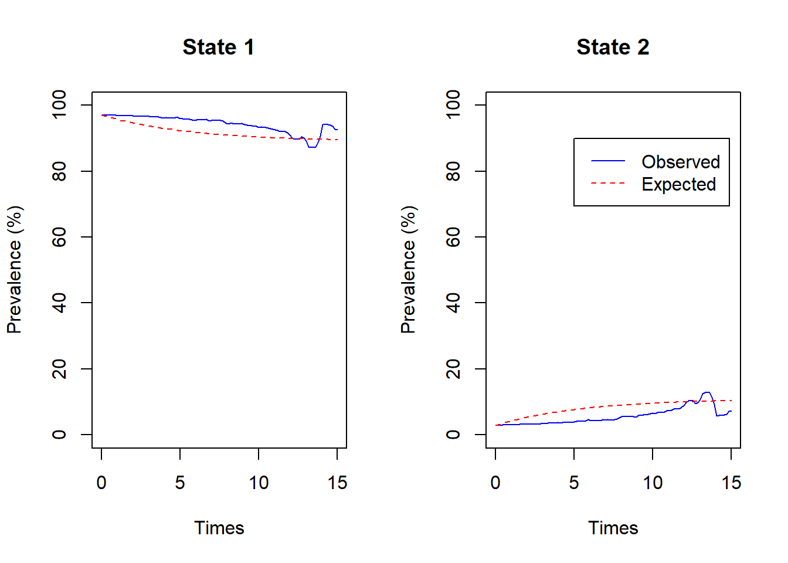
Model fit was assessed by comparing observed and expected state prevalences over time.
plot.prevalence.msm(Kp_msm_cov_fit, mintime = 0, maxtime = 15,
legend.pos = c(5, 90))10 E. coli
10.1 Preparing the data
Generating the presence/absence of E. coli (takes 2.5”):
E_coli_raw <- presence_abscence(MALDITOF, USUBJID, SampleSchedule, Identification_MALDITOF, "Escherichia coli")Which gives:
E_coli_raw# A tibble: 1,038 × 5
USUBJID SampleSchedule genus species state
<chr> <chr> <chr> <chr> <dbl>
1 008-1-1-05 ADMISSION Escherichia coli 2
2 008-1-1-05 DISCHARGE Klebsiella pneumoniae 2
3 008-1-1-07 ADMISSION Escherichia coli 2
4 008-1-1-07 DISCHARGE Escherichia coli 2
5 008-1-1-08 ADMISSION Escherichia coli 2
6 008-1-1-08 DISCHARGE Escherichia coli 2
7 008-1-1-100 DISCHARGE Enterobacter hormaechei 1
8 008-1-1-14 ADMISSION Escherichia coli 2
9 008-1-1-14 DISCHARGE Kluyvera georgiana 2
10 008-1-1-15 DISCHARGE Escherichia coli 2
# ℹ 1,028 more rowsWhere 1 is absence and 2 is presence. Adding the samples with negative culture:
(E_coli_raw_a <- add_negatives(E_coli_raw, dates, USUBJID, SampleSchedule))# A tibble: 4,000 × 6
USUBJID SampleSchedule value genus species state
<chr> <chr> <dttm> <chr> <chr> <dbl>
1 008-1-1-01 ADMISSION 2025-03-11 16:30:00 <NA> <NA> 1
2 008-1-1-01 DISCHARGE 2025-03-13 14:40:00 <NA> <NA> 1
3 008-1-1-02 ADMISSION 2025-03-12 10:00:00 <NA> <NA> 1
4 008-1-1-02 DISCHARGE 2025-03-14 10:00:00 <NA> <NA> 1
5 008-1-1-03 ADMISSION 2025-03-12 09:50:00 <NA> <NA> 1
6 008-1-1-03 DISCHARGE 2025-03-14 09:50:00 <NA> <NA> 1
7 008-1-1-04 ADMISSION 2025-03-12 13:45:00 <NA> <NA> 1
8 008-1-1-04 DISCHARGE 2025-03-13 14:55:00 <NA> <NA> 1
9 008-1-1-05 ADMISSION 2025-03-12 13:40:00 Escherichia coli 2
10 008-1-1-05 DISCHARGE 2025-03-28 17:00:00 Klebsiella pneumoniae 2
# ℹ 3,990 more rowsSelecting the patients that have samples from at least 2 time points:
(E_coli <- select2time_points(E_coli_raw_a, USUBJID))# A tibble: 3,808 × 6
USUBJID SampleSchedule value genus species state
<chr> <chr> <dttm> <chr> <chr> <dbl>
1 008-1-1-01 ADMISSION 2025-03-11 16:30:00 <NA> <NA> 1
2 008-1-1-01 DISCHARGE 2025-03-13 14:40:00 <NA> <NA> 1
3 008-1-1-02 ADMISSION 2025-03-12 10:00:00 <NA> <NA> 1
4 008-1-1-02 DISCHARGE 2025-03-14 10:00:00 <NA> <NA> 1
5 008-1-1-03 ADMISSION 2025-03-12 09:50:00 <NA> <NA> 1
6 008-1-1-03 DISCHARGE 2025-03-14 09:50:00 <NA> <NA> 1
7 008-1-1-04 ADMISSION 2025-03-12 13:45:00 <NA> <NA> 1
8 008-1-1-04 DISCHARGE 2025-03-13 14:55:00 <NA> <NA> 1
9 008-1-1-05 ADMISSION 2025-03-12 13:40:00 Escherichia coli 2
10 008-1-1-05 DISCHARGE 2025-03-28 17:00:00 Klebsiella pneumoniae 2
# ℹ 3,798 more rowsMaking the dataset for the multistate modelling:
(Ec_msm <- state_time(E_coli, dates, USUBJID,ADMISSION, DISCHARGE, SampleSchedule))# A tibble: 3,808 × 7
USUBJID SampleSchedule value genus species state days
<chr> <chr> <dttm> <chr> <chr> <dbl> <dbl>
1 008-1-1-01 ADMISSION 2025-03-11 16:30:00 <NA> <NA> 1 0
2 008-1-1-01 DISCHARGE 2025-03-13 14:40:00 <NA> <NA> 1 1.92
3 008-1-1-02 ADMISSION 2025-03-12 10:00:00 <NA> <NA> 1 0
4 008-1-1-02 DISCHARGE 2025-03-14 10:00:00 <NA> <NA> 1 2
5 008-1-1-03 ADMISSION 2025-03-12 09:50:00 <NA> <NA> 1 0
6 008-1-1-03 DISCHARGE 2025-03-14 09:50:00 <NA> <NA> 1 2
7 008-1-1-04 ADMISSION 2025-03-12 13:45:00 <NA> <NA> 1 0
8 008-1-1-04 DISCHARGE 2025-03-13 14:55:00 <NA> <NA> 1 1.05
9 008-1-1-05 ADMISSION 2025-03-12 13:40:00 Escherichia coli 2 0
10 008-1-1-05 DISCHARGE 2025-03-28 17:00:00 Klebsiella pneumo… 2 16.1
# ℹ 3,798 more rowsAdding covariates:
(Ec_msm_cov <- Ec_msm |>
add_other_CRE_at_admission("Escherichia coli") |>
add_ward() |>
add_CRE_prevalence_in_ward()|>
mutate(estimate_log = log1p(estimate),
estimate_med = estimate > median(estimate),
estimate_quartile = cut(estimate,
breaks = quantile(estimate),
probs = c(0, 1/3, 2/3, 1)),
include.lowest = TRUE)|>
add_covariates_pt()|>
mutate(early_any_abx = replace_na(early_any_abx, FALSE),
early_DOT = tidyr::replace_na(early_DOT, 0),
early_carb_DOT = tidyr::replace_na(early_carb_DOT, 0),
DOT = tidyr::replace_na(DOT, 0),
DOT_bin = DOT > 0,
DOT_5 = DOT/5,
time_interval = factor(ifelse(days <= 7, "early", "late")))) # A tibble: 3,808 × 113
USUBJID SampleSchedule value genus species state days otherCRE
<chr> <chr> <dttm> <chr> <chr> <dbl> <dbl> <lgl>
1 008-1-… ADMISSION 2025-03-11 16:30:00 <NA> <NA> 1 0 FALSE
2 008-1-… DISCHARGE 2025-03-13 14:40:00 <NA> <NA> 1 1.92 FALSE
3 008-1-… ADMISSION 2025-03-12 10:00:00 <NA> <NA> 1 0 FALSE
4 008-1-… DISCHARGE 2025-03-14 10:00:00 <NA> <NA> 1 2 FALSE
5 008-1-… ADMISSION 2025-03-12 09:50:00 <NA> <NA> 1 0 FALSE
6 008-1-… DISCHARGE 2025-03-14 09:50:00 <NA> <NA> 1 2 FALSE
7 008-1-… ADMISSION 2025-03-12 13:45:00 <NA> <NA> 1 0 FALSE
8 008-1-… DISCHARGE 2025-03-13 14:55:00 <NA> <NA> 1 1.05 FALSE
9 008-1-… ADMISSION 2025-03-12 13:40:00 Esch… coli 2 0 FALSE
10 008-1-… DISCHARGE 2025-03-28 17:00:00 Kleb… pneumo… 2 16.1 FALSE
# ℹ 3,798 more rows
# ℹ 105 more variables: ward <chr>, estimate <dbl>, lower <dbl>, upper <dbl>,
# estimate_log <dbl>, estimate_med <lgl>, estimate_quartile <fct>,
# include.lowest <lgl>, SITEID <chr>, GENDER <chr>, ADMISSION_DATE <dttm>,
# CORMOBIDITY <lgl>, MI_HIS <lgl>, CHF <lgl>, PVD <lgl>, CVD <lgl>,
# DEMENTIA <lgl>, CPD <lgl>, CTD <lgl>, PUD <lgl>, MILD_LIVER <lgl>,
# SEV_LIVER <lgl>, HEMIPLEGIA <lgl>, SEV_RENAL <lgl>, DIAB_NOEOD <lgl>, …Check number of events in each state and state transitions, and crude count at admission and discharge
table(Ec_msm_cov$state)
1 2
2988 820 table(Ec_msm_cov$state[-nrow(Ec_msm_cov)], Ec_msm_cov$state[-1] )
1 2
1 2462 525
2 525 295table(Ec_msm_cov$state[Ec_msm_cov$days == 0]) # admission table
1 2
1607 297 #(Ec_msm_cov$state[Ec_msm_cov$days > 0]) # discharge10.2 Multi-state modelling
10.2.1 State definition and transition structure
We defined a two-state continuous-time multistate model with the following states:
State 1: No carriage of CRE
State 2: Carriage of CRE
The following transitions were allowed:
1 → 2: Acquisition of CRE carriage
2 → 1: Clearance of CRE carriage
Patient states were observed at discrete time points (admission and discharge), and transitions between states were not observed continuously, resulting in interval-censored data. The underlying process was assumed to follow a time-homogeneous continuous-time Markov model.
Clearance (2 → 1) was included to allow reversibility of carriage status between observation times, although the exact timing of clearance was not observed. Given the limited number of observation time points, estimates of clearance should be interpreted with caution.
Time was measured in days since admission. Discharge defined the end of the observation period and was treated as right censoring rather than as a separate state. Transition intensities are therefore interpreted conditional on the observed follow-up time. Because discharge terminates observation and may be related to patient status, it may represent an informative censoring mechanism, which is not explicitly modeled in this framework.
10.2.2 Basic operations
(Ec_msm_fit <- bsm(state ~ days, USUBJID, Ec_msm))
Call:
bsm(formula = state ~ days, subject = USUBJID, data = Ec_msm)
Maximum likelihood estimates
Transition intensities
Baseline
State 1 - State 1 -0.06138 (-0.07049,-0.05345)
State 1 - State 2 0.06138 ( 0.05345, 0.07049)
State 2 - State 1 0.09099 ( 0.07234, 0.11444)
State 2 - State 2 -0.09099 (-0.11444,-0.07234)
-2 * log-likelihood: 1901.692 Estimated transition intensity Q matrix (instantaneous rates)
qmatrix.msm(Ec_msm_fit) State 1 State 2
State 1 -0.06138 (-0.07049,-0.05345) 0.06138 ( 0.05345, 0.07049)
State 2 0.09099 ( 0.07234, 0.11444) -0.09099 (-0.11444,-0.07234)Estimated transition probability P matrix per day (actual probabilities over time - here 1 day):
pmatrix.msm(Ec_msm_fit) State 1 State 2
State 1 0.94306368 0.05693632
State 2 0.08439292 0.91560708Estimated mean sojourn times in each transient state (the average time a patient stays in a state before transitioning): Mathematically: Mean sojourn time = 1/ (exit rate)
sojourn.msm(Ec_msm_fit) estimates SE L U
State 1 16.29086 1.149798 14.186220 18.70773
State 2 10.99075 1.286204 8.738051 13.82420Log-likelihood of the model:
logLik(Ec_msm_fit)'log Lik.' -950.846 (df=2)10.2.3 Bootstrapped CIs
Bootstrapping was used to obtain robust confidence intervals for transition intensities due to potential model uncertainty and interval censoring.
Bootstrapping estimates (1000 samples, takes 42” in parallel on 11 cores; if 1 core, takes 4 minutes):
q_array <- boot_msm(Ec_msm_fit, qmatrix.msm, 1000, cores = 1)The bootstrap estimate of the standard deviation:
boot_stat(q_array) State 1 State 2
State 1 0.004592085 0.004592085
State 2 0.011402397 0.011402397And with the mean:
boot_stat(q_array, mean) State 1 State 2
State 1 -0.06150423 0.06150423
State 2 0.09116669 -0.09116669Or the median:
boot_stat(q_array, median) State 1 State 2
State 1 -0.06141727 0.06141727
State 2 0.09082190 -0.09082190The bootstrap estimate of the 95% confidence interval:
boot_ci(q_array), , State 1
State 1 State 2
2.5% -0.07077452 0.05291052
97.5% -0.05291052 0.07077452
, , State 2
State 1 State 2
2.5% 0.07030133 -0.11439616
97.5% 0.11439616 -0.0703013310.2.4 Covariates
10.2.4.1 One Covariate
Covariates were applied to a specific transition (i.e. acquisition only).
(Ec_msm_cov_fit <- bsm(state ~ days, USUBJID, Ec_msm_cov, covariates = list("1-2" = ~ otherCRE)))
Call:
bsm(formula = state ~ days, subject = USUBJID, data = Ec_msm_cov, covariates = list(`1-2` = ~otherCRE))
Maximum likelihood estimates
Baselines are with covariates set to their means
Transition intensities with hazard ratios for each covariate
Baseline otherCRETRUE
State 1 - State 1 -0.06124 (-0.07035,-0.05330)
State 1 - State 2 0.06124 ( 0.05330, 0.07035) 0.8864 (0.4605,1.706)
State 2 - State 1 0.09063 ( 0.07201, 0.11407) 1.0000
State 2 - State 2 -0.09063 (-0.11407,-0.07201)
-2 * log-likelihood: 1901.557 qmatrix.msm(Ec_msm_cov_fit, covariates=list(otherCRE = FALSE)) State 1 State 2
State 1 -0.06154 (-0.07070,-0.05357) 0.06154 ( 0.05357, 0.07070)
State 2 0.09063 ( 0.07201, 0.11407) -0.09063 (-0.11407,-0.07201)qmatrix.msm(Ec_msm_cov_fit, covariates=list(otherCRE = TRUE)) State 1 State 2
State 1 -0.06154 (-0.07070,-0.05357) 0.06154 ( 0.05357, 0.07070)
State 2 0.09063 ( 0.07201, 0.11407) -0.09063 (-0.11407,-0.07201)(Ec_msm_cov_fit <- bsm(state ~ days, USUBJID, Ec_msm_cov, covariates = list("1-2" = ~ estimate)))
Call:
bsm(formula = state ~ days, subject = USUBJID, data = Ec_msm_cov, covariates = list(`1-2` = ~estimate))
Maximum likelihood estimates
Baselines are with covariates set to their means
Transition intensities with hazard ratios for each covariate
Baseline estimate
State 1 - State 1 -0.06206 (-0.07128,-0.05403)
State 1 - State 2 0.06206 ( 0.05403, 0.07128) 8.765 (1.062,72.33)
State 2 - State 1 0.09171 ( 0.07289, 0.11538) 1.000
State 2 - State 2 -0.09171 (-0.11538,-0.07289)
-2 * log-likelihood: 1897.936 (Ec_msm_cov_fit <- bsm(state ~ days, USUBJID, Ec_msm_cov, covariates = list("1-2" = ~ estimate_quartile)))
Call:
bsm(formula = state ~ days, subject = USUBJID, data = Ec_msm_cov, covariates = list(`1-2` = ~estimate_quartile))
Maximum likelihood estimates
Baselines are with covariates set to their means
Transition intensities with hazard ratios for each covariate
Baseline estimate_quartile(0.0132,0.0313]
State 1 - State 1 -0.06190 (-0.07119,-0.05382)
State 1 - State 2 0.06190 ( 0.05382, 0.07119) 1.026 (0.7635,1.379)
State 2 - State 1 0.09251 ( 0.07349, 0.11644) 1.000
State 2 - State 2 -0.09251 (-0.11644,-0.07349)
estimate_quartile(0.0313,0.0611]
State 1 - State 1
State 1 - State 2 0.882 (0.6185,1.258)
State 2 - State 1 1.000
State 2 - State 2
estimate_quartile(0.0611,0.305]
State 1 - State 1
State 1 - State 2 1.337 (0.9766,1.829)
State 2 - State 1 1.000
State 2 - State 2
-2 * log-likelihood: 1895.151 Summary: The covariate was not associated with infection risk when modeled as a continuous, dichotomized, or categorized variable. In the quartile-based analysis, no significant differences were observed across groups, and no clear dose-response relationship was evident.
10.2.4.2 More Covariates
Fit-test
fit_test <- bsm(state ~ days, USUBJID, Ec_msm_cov,
covariates = list("1-2" = ~ age) )
summary(fit_test)
Observed numbers of individuals occupying states at each time
State 1 State 2 Total
0 1607 297 1904
2.50208333333333 1271 232 1503
5.00416666666667 780 151 931
7.50625 284 66 350
10.0083333333333 105 29 134
12.5104166666667 53 15 68
15.0125 22 4 26
17.5145833333333 11 1 12
20.0166666666667 5 1 6
22.51875 2 1 3
25.0208333333333 0 1 1
Expected numbers of individuals occupying states at each time
State 1 State 2 Total
0 1607.0000000 297.0000000 1904
2.50208333333333 1150.8535864 352.1464136 1503
5.00416666666667 664.3913119 266.6086881 931
7.50625 237.7256747 112.2743253 350
10.0083333333333 87.6617004 46.3382996 134
12.5104166666667 43.4417132 24.5582868 68
15.0125 16.3269586 9.6730414 26
17.5145833333333 7.4504415 4.5495585 12
20.0166666666667 3.6795678 2.3204322 6
22.51875 1.8632769 1.1367231 3
25.0208333333333 0.6022759 0.3977241 1
Observed prevalences of states (percentages of population at risk)
State 1 State 2
0 84.40126 15.598739
2.50208333333333 84.56420 15.435795
5.00416666666667 83.78088 16.219119
7.50625 81.14286 18.857143
10.0083333333333 78.35821 21.641791
12.5104166666667 77.94118 22.058824
15.0125 84.61538 15.384615
17.5145833333333 91.66667 8.333333
20.0166666666667 83.33333 16.666667
22.51875 66.66667 33.333333
25.0208333333333 0.00000 100.000000
Expected prevalences of states (percentages of population at risk)
State 1 State 2
0 84.40126 15.59874
2.50208333333333 76.57043 23.42957
5.00416666666667 71.36319 28.63681
7.50625 67.92162 32.07838
10.0083333333333 65.41918 34.58082
12.5104166666667 63.88487 36.11513
15.0125 62.79599 37.20401
17.5145833333333 62.08701 37.91299
20.0166666666667 61.32613 38.67387
22.51875 62.10923 37.89077
25.0208333333333 60.22759 39.77241
Transition hazard ratios corresponding to covariate effects
age ( unit of 1 )
HR L U
State 1 - State 2 0.99 0.99 1
State 2 - State 1 1.00 1.00 1str(summary(fit_test))List of 3
$ prevalences :List of 4
..$ Observed : num [1:11, 1:3] 1607 1271 780 284 105 ...
.. ..- attr(*, "dimnames")=List of 2
.. .. ..$ : chr [1:11] "0" "2.50208333333333" "5.00416666666667" "7.50625" ...
.. .. ..$ : chr [1:3] "State 1" "State 2" "Total"
..$ Expected : num [1:11, 1:3] 1607 1150.9 664.4 237.7 87.7 ...
.. ..- attr(*, "dimnames")=List of 2
.. .. ..$ : chr [1:11] "0" "2.50208333333333" "5.00416666666667" "7.50625" ...
.. .. ..$ : chr [1:3] "State 1" "State 2" "Total"
..$ Observed percentages: num [1:11, 1:2] 84.4 84.6 83.8 81.1 78.4 ...
.. ..- attr(*, "dimnames")=List of 2
.. .. ..$ : chr [1:11] "0" "2.50208333333333" "5.00416666666667" "7.50625" ...
.. .. ..$ : chr [1:2] "State 1" "State 2"
..$ Expected percentages: num [1:11, 1:2] 84.4 76.6 71.4 67.9 65.4 ...
.. ..- attr(*, "dimnames")=List of 2
.. .. ..$ : chr [1:11] "0" "2.50208333333333" "5.00416666666667" "7.50625" ...
.. .. ..$ : chr [1:2] "State 1" "State 2"
..- attr(*, "class")= chr [1:2] "msm.prevalence" "list"
$ hazard :List of 1
..$ age: num [1:2, 1:3] 0.995 1 0.988 1 1.001 ...
.. ..- attr(*, "dimnames")=List of 2
.. .. ..$ : chr [1:2] "State 1 - State 2" "State 2 - State 1"
.. .. ..$ : chr [1:3] "HR" "L" "U"
$ hazard.scale: num 1
- attr(*, "class")= chr "summary.msm"Univariable exploration
List of specific antibiotic agents to consider
“Gentamicin”, “Imipenem_cilastatin”, “Levofloxacin”,“Linezolid”, “Ceftizoxime”, “Ciprofloxacin”, “Metronidazole_IV”, “Cefoperazone”, “Amoxicillin_clavulanicAcid”, “Ceftriaxone”, “Doxycycline”, “Amoxicillin”, “Ceftazidime”, “Metronidazole_oral”, “Tinidazole_oral”, “Cefotaxime”, “Cefuroxime”, “Amikacin”, “Ticarcillin/acid clavulanic”, “Piperacillin_tazobactam”, “Cefotiam”, “Moxifloxacin”, “Ampicillin_sulbactam”, “Cefepime”, “Meropenem”, “Vancomycin_IV”, “Cefixime”, “Spiramycin_metronidazole”, “Azithromycin”, “Ertapenem”, “Ofloxacin”, “Cefoxitin”, “Tobramycin”, “Cefazolin”, “Cefpodoxime_proxetil”, “Cefradin”, “Cefmetazol”, “Clarithromycin”, “Cefamandol”, “Tinidazole_IV”, “Cefoperazon_sulbactam”, “Cefoperazone_sulbactam”, “Cefalexin”, “Clindamycin”, “Cefaclor”, “Cloxacillin”
(takes 10’’)
vars <- c(
"estimate","upper","lower","estimate_quartile", "otherCRE", "age", "GENDER",
"Ab_history", "HealthcareHistory", "CORMOBIDITY", "CPD", "SEV_RENAL",
"wardtype","hospitaltype", "problem_alcohol", "problem_drug",
"MedicationHistory", "smoking", "children", "married", "householdsize",
"job", "early_any_abx","early_DOT", "DOT", "DOT_bin", "DOT_5",
"Amoxicillin_clavulanicAcid","Cefoperazone", "Ciprofloxacin", "ICDGroup"
)
# run univariable models
results_list <- lapply(vars, function(v) {
fit <- try(
bsm(
state ~ days,
USUBJID,
Ec_msm_cov,
covariates = list("1-2" = as.formula(paste0("~", v)))
),
silent = TRUE
)
# skip failed models
if (inherits(fit, "try-error")) return(NULL)
res <- extract_hr_msm(fit)
if (is.null(res)) return(NULL)
res$variable <- v
res
})
# combine results
Ec_uni_table <- bind_rows(results_list)
# Add summary numbers and %
Ec_pt <- Ec_msm_cov |>
group_by(USUBJID) |>
slice(1) |>
ungroup()
nN_list <- lapply(vars, get_nN, data = Ec_pt)
nN_table <- bind_rows(nN_list)
Ec_uni_table_final <- Ec_uni_table |>
left_join(nN_table, by = "variable") |>
mutate(
n_pct = ifelse(
is.na(n),
NA,
paste0(n, "/", N, " (", round(pct, 1), "%)")
),
significant = ifelse(lower > 1 | upper < 1, "Yes", "No")
)
write.csv(Ec_uni_table_final, "Ec_uni_table_final.csv", row.names = FALSE)
Ec_uni_table_final HR lower upper variable n N pct
1 8.7654033 1.06221815 7.233194e+01 estimate NA NA NA
2 3.1842545 1.40927722 7.194806e+00 upper NA NA NA
3 1674.7771031 0.01491934 1.880028e+08 lower NA NA NA
4 1.0262183 0.76347564 1.379381e+00 estimate_quartile NA NA NA
5 0.8820158 0.61847749 1.257850e+00 estimate_quartile NA NA NA
6 1.3365364 0.97658190 1.829165e+00 estimate_quartile NA NA NA
7 0.8863709 0.46054264 1.705930e+00 otherCRE NA NA NA
8 0.9946763 0.98792550 1.001473e+00 age NA NA NA
9 1.1522665 0.91906605 1.444638e+00 GENDER NA NA NA
10 0.8654865 0.64685819 1.158008e+00 Ab_history NA NA NA
11 0.8363161 0.63025649 1.109746e+00 HealthcareHistory NA NA NA
12 0.8491843 0.66921123 1.077558e+00 CORMOBIDITY NA NA NA
13 1.4781028 0.80253570 2.722356e+00 CPD NA NA NA
14 1.0181819 0.50487031 2.053388e+00 SEV_RENAL NA NA NA
15 1.5375558 1.21243019 1.949867e+00 wardtype NA NA NA
16 0.8355197 0.63131793 1.105771e+00 hospitaltype NA NA NA
17 1.2066109 0.85553638 1.701751e+00 problem_alcohol NA NA NA
18 1.2726780 0.69550420 2.328827e+00 problem_drug NA NA NA
19 0.9628912 0.76779336 1.207564e+00 MedicationHistory NA NA NA
20 1.1866930 0.86371650 1.630443e+00 smoking NA NA NA
21 1.1082157 0.83161868 1.476809e+00 smoking NA NA NA
22 0.9147095 0.71436607 1.171239e+00 children NA NA NA
23 0.8862651 0.66158505 1.187248e+00 married NA NA NA
24 1.0192924 0.96153200 1.080523e+00 householdsize NA NA NA
25 1.8485688 1.46777787 2.328150e+00 early_any_abx NA NA NA
26 1.1085332 1.05706484 1.162508e+00 early_DOT NA NA NA
27 1.0386421 1.02563976 1.051809e+00 DOT NA NA NA
28 2.9587665 2.20869866 3.963555e+00 DOT_bin NA NA NA
29 1.2087637 1.13497574 1.287349e+00 DOT_5 NA NA NA
30 1.0092167 0.96243852 1.058268e+00 Amoxicillin_clavulanicAcid NA NA NA
31 0.9762150 0.93631030 1.017820e+00 Cefoperazone NA NA NA
32 1.0570628 1.01624008 1.099525e+00 Ciprofloxacin NA NA NA
33 1.1040788 0.69299048 1.759029e+00 ICDGroup NA NA NA
34 1.4760180 0.88168634 2.470980e+00 ICDGroup NA NA NA
35 2.0027512 1.10824056 3.619261e+00 ICDGroup NA NA NA
36 1.3939640 0.76431777 2.542314e+00 ICDGroup NA NA NA
37 1.2759208 0.57597641 2.826459e+00 ICDGroup NA NA NA
38 1.2475256 0.81391119 1.912150e+00 ICDGroup NA NA NA
39 1.4275963 0.89532173 2.276311e+00 ICDGroup NA NA NA
n_pct significant
1 NA Yes
2 NA Yes
3 NA No
4 NA No
5 NA No
6 NA No
7 NA No
8 NA No
9 NA No
10 NA No
11 NA No
12 NA No
13 NA No
14 NA No
15 NA Yes
16 NA No
17 NA No
18 NA No
19 NA No
20 NA No
21 NA No
22 NA No
23 NA No
24 NA No
25 NA Yes
26 NA Yes
27 NA Yes
28 NA Yes
29 NA Yes
30 NA No
31 NA No
32 NA Yes
33 NA No
34 NA No
35 NA Yes
36 NA No
37 NA No
38 NA No
39 NA NoMultivariable model
covariates_Ec = list("1-2" = ~ age + early_DOT + wardtype)
(Ec_msm_cov_fit <- bsm(state ~ days, USUBJID, Ec_msm_cov,
covariates = covariates_Ec))
Call:
bsm(formula = state ~ days, subject = USUBJID, data = Ec_msm_cov, covariates = covariates_Ec)
Maximum likelihood estimates
Baselines are with covariates set to their means
Transition intensities with hazard ratios for each covariate
Baseline age
State 1 - State 1 -0.06145 (-0.07090,-0.05326)
State 1 - State 2 0.06145 ( 0.05326, 0.07090) 0.9971 (0.9901,1.004)
State 2 - State 1 0.09604 ( 0.07601, 0.12136) 1.0000
State 2 - State 2 -0.09604 (-0.12136,-0.07601)
early_DOT wardtypesurgical
State 1 - State 1
State 1 - State 2 1.088 (1.035,1.144) 1.335 (1.036,1.719)
State 2 - State 1 1.000 1.000
State 2 - State 2
-2 * log-likelihood: 1878.012 10.2.5 Diagnostics
Model fit was assessed by comparing observed and expected state prevalences over time.
plot.prevalence.msm(Ec_msm_fit, mintime = 0, maxtime = 15, legend.pos = c(5, 90))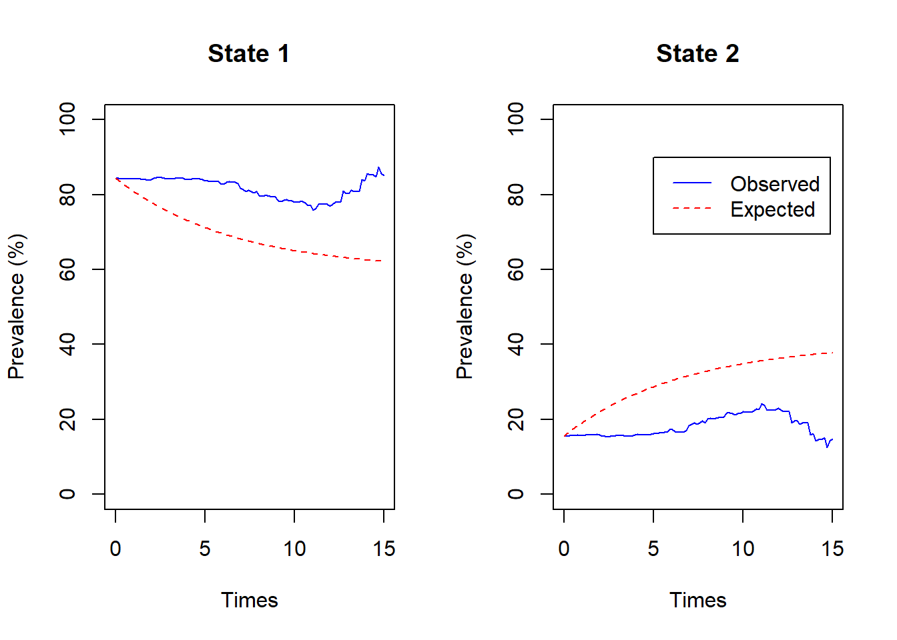
Model fit was assessed by comparing observed and expected state prevalences over time.
plot.prevalence.msm(Ec_msm_cov_fit, mintime = 0, maxtime = 15,
legend.pos = c(5, 90))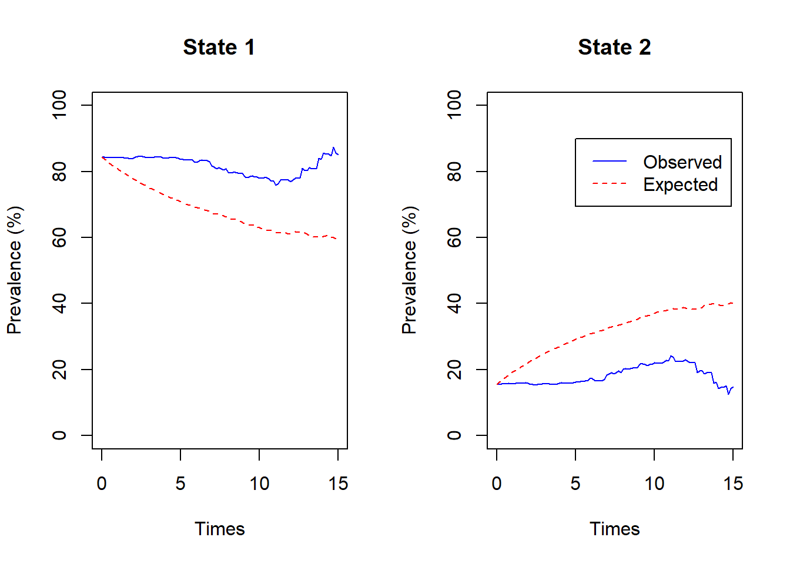